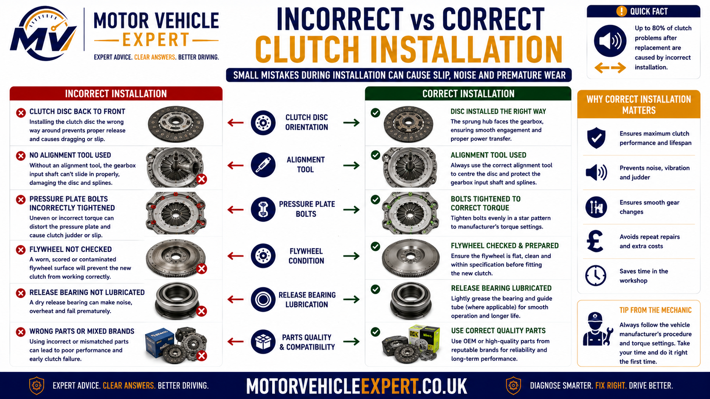
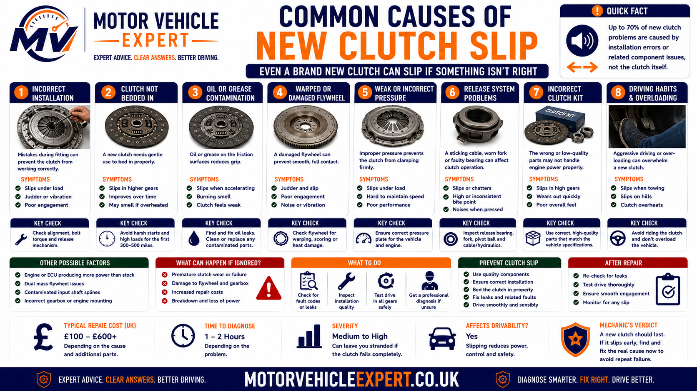
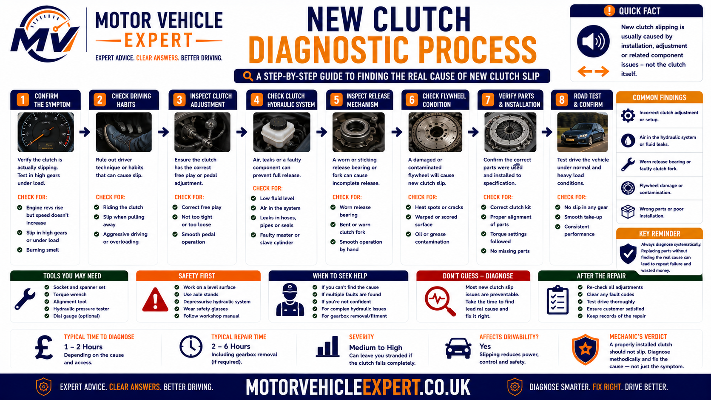
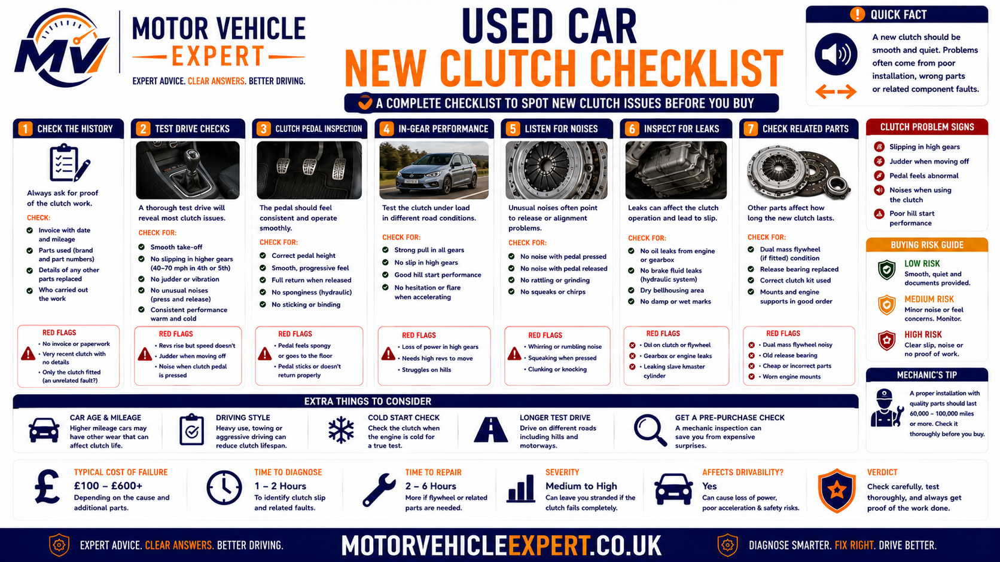

Use the Diagnostic App for Clutch Slip After Replacement
Poor acceleration after clutch replacement does not automatically prove that the new friction plate is defective. Incorrect installation, hydraulic preload, an unrepaired oil leak, flywheel damage, engine power loss and transmission faults can create overlapping symptoms.
1. Record When Slip Began
Note whether the fault was present immediately, after several journeys or only once the clutch became hot.
2. Compare Revs and Speed
Confirm whether engine RPM rises faster than road speed while the pedal remains fully released.
3. Check Pedal and Release Clues
Record bite-point position, pedal return, hydraulic changes, cable adjustment and release-bearing noise.
4. Review the Repair Evidence
Check the clutch-kit part number, flywheel decision, seal work, hydraulic components and warranty.
Record the rev flare, mileage since repair, temperature and driving condition. Keep the original invoice and contact the repairing garage before another workshop removes or alters the fitted components.
Why Is a New Clutch Slipping After Replacement?
A correctly specified and installed clutch should not produce genuine rev flare. If engine RPM rises without matching road speed after replacement, the clutch may not be clamping fully or the new friction surfaces may have become contaminated or damaged.
Common causes include the wrong clutch kit, incorrect friction- plate orientation, uneven pressure-plate installation, an incorrectly fitted self-adjusting clutch, a worn flywheel being reused, an unrepaired oil leak, hydraulic pressure retention, excessive cable tension or a release component holding the clutch partly disengaged.
Wrong or Incompatible Parts
The clutch kit, pressure plate, bearing or slave cylinder may not match the exact engine, gearbox and flywheel application.
Installation Fault
Incorrect orientation, alignment, tightening or self-adjusting clutch procedure can reduce clamping force.
Contamination
Engine oil, gearbox oil, hydraulic fluid or installation grease can reduce friction immediately.
Flywheel Problem
Scoring, hot spots, distortion or excessive dual-mass movement can prevent even clutch contact.
Hydraulic Preload
Residual pressure can keep the release bearing applied and reduce pressure-plate clamping.
Over-Adjusted Cable
Insufficient free play can leave a cable-operated clutch partly released.
Release-System Fault
An incorrect bearing, fork, pivot, guide or slave-cylinder position can prevent complete engagement.
Clutch Capacity Too Low
A modified engine may produce more torque than the fitted replacement clutch can hold.
Supporting Evidence
- ✓ Slip began immediately after replacement.
- ✓ Revs flare in fourth, fifth or sixth gear.
- ✓ The bite point or pedal return is abnormal.
- ✓ Slip becomes worse as the vehicle warms.
- ✓ Oil or hydraulic fluid is visible.
- ✓ A strong burning smell follows acceleration.
- ✓ The flywheel or seals were not documented.
Alternative Evidence
- ! Engine RPM struggles rather than flares.
- ! Misfire, hesitation or warning lights are present.
- ! Turbocharger boost is weak or absent.
- ! Driven-wheel spin or traction control explains the RPM rise.
- ! The vehicle uses an automatic or dual-clutch transmission.
- ! RPM and road speed remain correctly linked.
| Post-repair behaviour | Likely interpretation | Recommended response |
|---|---|---|
| Different pedal feel but no rev flare | Normal change may be possible | Drive gently and monitor operation |
| Brief smell after difficult manoeuvring | Temporary heat may have developed | Allow cooling and avoid repeated clutch slip |
| Revs flare under acceleration | Genuine clutch slip | Stop testing and contact the repairer |
| Slip becomes worse when hot | Friction, clamping or hydraulic-return fault | Arrange prompt post-repair diagnosis |
| Oil or hydraulic fluid is present | Contaminated new clutch possible | Repair the leak and inspect the clutch internally |
| Severe flare, smoke or unreliable drive | Advanced post-repair failure | Stop driving and arrange recovery |
A replacement clutch can feel lighter, heavier or engage at a different pedal position. Those changes do not excuse engine RPM rising independently of road speed once the pedal is fully released.
Gentle initial use may protect new friction surfaces, but a correctly fitted clutch should transfer engine torque from the first journey. Repeated high-load testing can damage the new clutch and weaken a warranty claim.
Is Clutch Slip After Replacement Serious?
Yes. Genuine clutch slip after replacement means the clutch is not transferring engine torque correctly. This is not an expected bedding-in characteristic and should be reported to the repairing garage before repeated driving overheats or damages the new components.
The underlying problem may be a fitting error, incompatible part, contaminated friction surface, defective pressure plate, damaged flywheel or an external release fault holding the clutch partly disengaged. Continued use can turn a correctable post-repair issue into a complete repeat clutch and flywheel replacement.
Slightly Different Pedal Feel
May Be NormalA new pressure plate, bearing or hydraulic component can alter pedal weight and engagement feel without causing slip.
Brief High-Gear Rev Flare
AbnormalIndependent RPM rise shows that full clutch torque transfer is not being maintained.
Slip Becomes Worse When Hot
Developing FaultHeat may be exposing contamination, inadequate clamping or residual hydraulic pressure.
Smoke or Loss of Drive
Breakdown RiskSevere friction overheating can damage the clutch, flywheel, seals and surrounding components.
Early Post-Repair Warning Signs
- ✓ Revs flare in fourth, fifth or sixth gear.
- ✓ Acceleration is weaker than before the repair.
- ✓ Slip began on the first or second journey.
- ✓ The bite point is unusually high or changes with heat.
- ✓ Pedal return feels slow or incomplete.
- ✓ A burning smell appears under ordinary acceleration.
- ✓ Fluid is visible around the pedal or bellhousing.
Urgent Failure Signs
- ! Slip occurs under gentle throttle.
- ! The clutch slips during pull-away.
- ! The vehicle cannot climb a normal hill.
- ! Drive becomes intermittent.
- ! A strong burning smell continues after stopping.
- ! Smoke appears near the gearbox.
- ! Pedal pressure or gear selection becomes unreliable.
Stop repeated load testing, record the symptoms and contact the original garage. Additional overheating can obscure whether the original cause was incorrect installation, contamination, defective components or a release-system fault.
Is Clutch Slip Normal While a New Clutch Beds In?
No. A replacement clutch may require considerate initial use while the new friction surfaces establish consistent contact, but it should still transmit engine torque without engine RPM flaring independently of road speed.
Bedding in describes gradual surface conformity under normal use. It does not mean the clutch should be allowed to slip, smell strongly, overheat or fail to accelerate the vehicle correctly.
Expected Post-Replacement Changes
- ✓ Pedal weight feels different from the old clutch.
- ✓ The bite point is at a different but stable position.
- ✓ Engagement feels sharper or smoother.
- ✓ Gear selection improves after the repair.
- ✓ A mild temporary smell follows one difficult manoeuvre.
- ✓ RPM and road speed remain correctly linked.
- ✓ Symptoms improve rather than become worse.
Abnormal Post-Replacement Behaviour
- ! Engine RPM rises without matching acceleration.
- ! Slip occurs in fourth, fifth or sixth gear.
- ! The clutch cannot hold engine torque uphill.
- ! A strong burning smell returns repeatedly.
- ! The bite point changes as the vehicle warms.
- ! The pedal fails to return completely.
- ! Slip becomes progressively worse.
Gentle Initial Driving
Avoid aggressive starts, towing and unnecessary high-load acceleration during the initial period.
No Deliberate Slipping
Do not hold the vehicle on the bite point or try to accelerate bedding in through friction.
No Rev Flare Expected
The clutch should remain mechanically locked once the pedal is fully released.
Pedal Feel Can Change
New springs, bearings and hydraulic components can alter pedal weight without reducing grip.
Bite Point Can Move
A different stable engagement position may be normal after replacing worn components.
Strong Smell Is Not Normal
Repeated friction smell suggests the clutch is slipping or being operated incorrectly.
High-Gear Slip Is Not Normal
Fourth-, fifth- or sixth-gear rev flare shows insufficient torque transfer.
Heat Should Not Change Grip
A correctly fitted clutch should remain consistent through normal operating temperature.
Symptoms Should Not Progress
Worsening slip indicates damage or an unresolved fault rather than bedding in.
| Post-repair observation | Normal or abnormal? | Recommended action |
|---|---|---|
| Pedal is lighter but clutch holds correctly | Potentially normal | Monitor during gentle driving |
| Bite point is different but remains stable | Potentially normal | Confirm full engagement and release |
| Revs flare under load | Abnormal | Contact the repairing garage |
| Strong smell appears repeatedly | Abnormal | Stop further high-load use |
| Slip becomes worse when hot | Abnormal | Check friction, clamping and hydraulic return |
| Vehicle cannot accelerate normally | Abnormal and safety relevant | Stop driving if performance is unreliable |
| Symptoms improve steadily with normal use | May reflect normal settling | Continue gentle use and monitor |
| Symptoms worsen with mileage | Active failure | Arrange immediate warranty inspection |
A driver should not be advised to hold the clutch at the bite point, perform hard launches or repeatedly test higher gears. These actions generate heat and can damage correctly installed new components.
Symptoms of Clutch Slip After Replacement
The strongest symptom is an engine-speed increase that is not matched by road-speed increase while the clutch pedal is fully released. Supporting symptoms can help identify whether the problem involves friction, clamping, contamination or the release system.
Engine Revs Flare
RPM rises suddenly while vehicle speed responds slowly.
Slip in High Gears
Fourth, fifth or sixth gear exposes inadequate clutch torque capacity.
Weak Uphill Acceleration
The engine speeds up but the vehicle struggles to maintain or increase road speed.
Slip During Overtaking
Full throttle produces noise and RPM without the expected acceleration.
Burning Friction Smell
Repeated slip converts engine power into heat at the clutch surfaces.
Smoke Near the Bellhousing
Severe friction overheating or fluid contamination may be present.
High Bite Point
The clutch engages near the top of travel despite being newly replaced.
Changing Bite Point
Engagement position changes with temperature or repeated pedal use.
Slow Pedal Return
Cable, hydraulic or linkage resistance may prevent complete clutch engagement.
Release-Bearing Noise
Noise with the pedal released can support incorrect preload or release geometry.
Judder and Slip Together
Contamination, flywheel damage or uneven pressure-plate contact may be present.
Oil or Fluid Leakage
A new friction plate may already be contaminated.
Slip Only When Hot
Heat exposes pressure-plate, friction or hydraulic-return problems.
Slip After Repeated Pedal Use
Residual hydraulic pressure or incomplete pedal return becomes more likely.
Intermittent Drive
Advanced slip can make torque transfer unpredictable.
Typical Pattern
- ✓ Slip occurs whenever high engine torque is applied.
- ✓ RPM flare is clean and repeatable.
- ✓ The pedal returns normally.
- ✓ High gears expose the fault first.
- ✓ A burning smell follows continued use.
- ✓ Slip was present immediately after the repair.
Typical Pattern
- ✓ Pedal return is incomplete or slow.
- ✓ Bite point changes during the journey.
- ✓ Slip becomes worse after repeated pedal operation.
- ✓ Cable free play is incorrect.
- ✓ Hydraulic pressure remains in the release circuit.
- ✓ Bearing or fork noise accompanies the slip.
An incorrect hydraulic setting can hold the clutch partly released and quickly overheat otherwise correct new friction components. Diagnosis should assess both the original cause and any secondary damage.
When Did the Clutch Start Slipping After Replacement?
The time between repair and symptom onset provides valuable diagnostic evidence. Immediate slip points towards parts, installation or release geometry, while delayed slip may involve a leak, hydraulic change, overheating or progressive component failure.
Immediately on Collection
Installation ConcernIncorrect parts, contamination, assembly procedure or release preload becomes more likely.
During the First Journey
Early Repair FaultHigh-load driving may expose inadequate clamping that gentle workshop movement did not reveal.
After Several Days
Developing FaultA fluid leak, hydraulic pressure retention or initial heat damage may be progressing.
After Several Thousand Miles
Wider InvestigationPart failure, contamination, incorrect clutch capacity or vehicle use must be considered.
| Fault onset | Stronger possible causes | Evidence to review |
|---|---|---|
| Slip existed before leaving the garage | Incorrect parts, assembly, adjustment or defective component | Workshop quality-control and road-test records |
| Slip appeared on first high-load acceleration | Insufficient clamping or incorrect clutch specification | Part numbers, pressure plate and flywheel |
| Slip appeared once the vehicle became hot | Hydraulic preload, heat distortion or contamination | Warm pressure test and pedal return |
| Slip developed after a few journeys | Oil leak, hydraulic leak or progressive overheating | Bellhousing leakage and friction condition |
| Slip followed engine remapping | Clutch torque rating exceeded | Verified engine output and clutch specification |
| Slip followed towing or repeated hill starts | Clutch overheating or unsuitable use | Heat damage and repair warranty terms |
| Slip appeared after pedal or hydraulic work | Incorrect adjustment or residual release pressure | Pushrod, compensation port, hose and slave travel |
| Slip developed long after the repair | New wear, leak or component failure possible | Mileage, driving conditions and current diagnosis |
Include mileage, selected gear, road gradient, engine temperature and whether the vehicle had carried passengers, luggage or a trailer. This evidence can help the garage distinguish an immediate repair fault from a later unrelated failure.
Correct vs Incorrect Clutch Installation
Clutch installation requires correct parts, clean friction surfaces, accurate alignment, controlled pressure-plate tightening and correct release-system geometry. A small fitting error can reduce clamping force or contaminate a new clutch before the vehicle leaves the workshop.

The exact installation procedure varies by clutch and vehicle design. Manufacturer instructions and any required special tools should be followed.
Required Conditions
- ✓ Exact vehicle-specific clutch kit is confirmed.
- ✓ Flywheel condition is measured and documented.
- ✓ Friction surfaces remain clean and dry.
- ✓ Clutch plate orientation is correct.
- ✓ An appropriate alignment tool is used.
- ✓ Pressure-plate bolts are tightened evenly.
- ✓ Correct torque values and sequence are followed.
- ✓ Self-adjusting mechanisms are handled correctly.
- ✓ Bearing, fork, pivot and guide are inspected.
- ✓ Cable or hydraulic return is verified.
Failure Risks
- ! Incorrect or mixed clutch components are fitted.
- ! Damaged flywheel is reused without inspection.
- ! Grease, oil or fluid contacts the friction surfaces.
- ! Friction plate is fitted in the wrong direction.
- ! Gearbox weight is used to force input-shaft alignment.
- ! Pressure-plate bolts are tightened unevenly.
- ! Self-adjusting clutch is reset or compressed incorrectly.
- ! Wrong release bearing or slave-cylinder height is used.
- ! Existing fork, guide or pivot wear is ignored.
- ! Residual cable or hydraulic preload remains.
Correct Part Identification
Vehicle registration alone may not identify every engine, gearbox and flywheel variation.
Correct Plate Orientation
Gearbox-side and flywheel-side markings must be followed.
Clean Handling
Friction surfaces must remain free from oil, grease and hydraulic fluid.
Flywheel Measurement
Surface condition and dual-mass movement must meet the manufacturer's limits.
Even Pressure-Plate Tightening
Bolts should be tightened progressively in the specified sequence.
Correct Alignment
The clutch plate must be centred without using gearbox bolts to force assembly.
Self-Adjusting Clutch Tools
Some assemblies require dedicated compression and installation equipment.
Release Geometry
Bearing height, fork position and slave-cylinder travel must be correct.
Post-Installation Verification
Pedal return, bite point, gear selection and high-load torque transfer should be checked.
| Installation error | Possible result | Required correction |
|---|---|---|
| Wrong clutch kit | Low clamping force or incorrect release geometry | Fit the correct matched components |
| Friction plate reversed | Contact, incomplete clamping or release problems | Remove the gearbox and install correctly |
| Pressure plate tightened unevenly | Cover distortion and inconsistent contact | Inspect and replace damaged components |
| Self-adjusting mechanism disturbed | Incorrect clamping or release setting | Replace or reset only using the approved method |
| Friction surfaces contaminated during fitting | Immediate or progressive slip | Replace contaminated components |
| Incorrect release-bearing height | Pressure plate remains partly disengaged | Fit the correct release component |
| Damaged flywheel reused | Poor contact, slip, judder and heat | Replace or machine only where approved |
| Hydraulic or cable preload remains | New clutch overheats under normal driving | Repair release-system return and inspect damage |
Misalignment can damage the clutch plate, hub, pilot support, input shaft and pressure plate. The gearbox should locate correctly before the fixing bolts are tightened.
The clutch kit, release bearing, concentric slave cylinder and flywheel specification should be checked against the vehicle's exact engine and gearbox identification.
Common Causes of a New Clutch Slipping
A replacement clutch can slip when the new friction assembly cannot clamp correctly, when contamination reduces surface grip or when the pedal and release system prevent the pressure plate from returning to its fully engaged position.
The fault may originate from the new parts, the installation procedure, a reused component or an unresolved vehicle fault. Diagnosis should therefore review the complete repair rather than assuming the friction plate alone is defective.

The symptom timing, repair invoice, fitted part numbers, pedal behaviour and evidence of fluid leakage help identify the strongest fault direction.
Incorrect Clutch Kit
The friction plate, pressure plate or release component may not match the exact engine, gearbox and flywheel application.
Mismatched Clutch Components
Parts from different kits may alter stack height, friction area or release geometry.
Incorrect Friction-Plate Orientation
A reversed plate can contact surrounding components or prevent correct clamping and release.
Contamination During Installation
Grease, oil, cleaning residue or dirty handling can reduce grip on new friction material.
Rear Crankshaft Seal Leak
Engine oil can contaminate the new clutch from behind the flywheel.
Gearbox Input-Shaft Seal Leak
Transmission oil can spread across the clutch from the gearbox side.
Concentric Slave-Cylinder Leak
Hydraulic fluid can contaminate the clutch from inside the bellhousing.
Weak or Defective Pressure Plate
Inadequate diaphragm-spring force can allow slip despite new friction material.
Pressure Plate Tightened Unevenly
Incorrect tightening can distort the cover and reduce uniform clamping.
Incorrect Self-Adjusting Clutch Procedure
The pressure-plate adjustment mechanism may be disturbed or incorrectly set during fitting.
Damaged Flywheel Reused
Scoring, hot spots, glazing or distortion can prevent even contact with the new clutch plate.
Failed Dual-Mass Flywheel
Excess movement, rocking or internal damage can undermine the new clutch repair.
Incorrect Flywheel Machining
Removing the wrong amount of material can alter clutch geometry and pressure-plate operation.
Incorrect Release Bearing
The wrong bearing height can hold the pressure plate partly released.
Release Fork or Pivot Wear
Existing wear can alter bearing alignment and prevent complete clutch engagement.
Damaged Bearing Guide Tube
Binding or misalignment can stop the release bearing returning correctly.
Hydraulic Pressure Retention
Residual pressure can maintain release load after the pedal is released.
Incorrect Master-Cylinder Pushrod Setting
The master piston may not return far enough to release pressure through the compensation port.
Restricted Hydraulic Hose
Internal hose damage can trap pressure at the slave cylinder.
Binding Slave Cylinder
A sticking piston may keep the release system partly operated.
Over-Adjusted Clutch Cable
Excess tension or insufficient free play can prevent full pressure-plate clamping.
Pedal Not Returning Fully
Pedal bushes, springs, linkage or a floor mat can maintain unwanted release travel.
Incorrect Clutch Capacity
A standard clutch may not hold the torque of a remapped or modified engine.
Severe Early Overheating
Repeated hill starts, towing or deliberate slipping can glaze new friction surfaces quickly.
| Supporting evidence | Stronger fault direction | Required inspection |
|---|---|---|
| Slip existed immediately after collection | Parts, installation or release geometry | Part numbers and complete fitting procedure |
| Slip appears mainly when hot | Hydraulic preload, clamping loss or contamination | Warm pedal, pressure and friction assessment |
| Oil is visible at the bellhousing | Rear crankshaft or input-shaft seal leakage | Identify fluid source and inspect clutch contamination |
| Hydraulic fluid level falls | Master, slave or hydraulic-line leakage | Pressure test and inspect the internal slave cylinder |
| Bite point changes after repeated pedal use | Residual release pressure | Check master-cylinder compensation and hose return |
| Slip followed cable adjustment | Excess tension or incorrect cable setting | Check specified free play and release-arm position |
| Slip and judder occur together | Contamination, flywheel damage or uneven clamping | Inspect friction surfaces and flywheel condition |
| Slip followed engine remapping | Clutch torque capacity may be insufficient | Verify engine output and clutch rating |
| Release-bearing noise accompanies slip | Incorrect preload, bearing or release geometry | Inspect bearing height, fork, guide and slave travel |
| Strong smell developed during the first journeys | New clutch has already overheated | Stop driving and assess secondary heat damage |
Hydraulic preload may have been the original problem, but continued driving can then glaze the new friction plate and damage the flywheel. Both the cause and its consequences must be repaired.
Can the Wrong Clutch Kit Cause Slip After Replacement?
Yes. Vehicles that appear identical can use different clutch, flywheel, pressure-plate and release configurations. Differences may depend on engine code, gearbox code, production date, power output, flywheel type or manufacturer revision.
An incorrect kit may physically fit but still provide inadequate clamping force, the wrong friction diameter or unsuitable release geometry.
Incorrect Friction Diameter
A smaller or incompatible contact area may reduce available torque capacity.
Wrong Spline Specification
Incorrect hub dimensions can create poor fit, misalignment or assembly damage.
Wrong Hub Offset
The clutch plate may contact the flywheel bolts, crankshaft or gearbox components.
Incorrect Pressure-Plate Height
Stack-height differences can alter clamping and release position.
Incorrect Diaphragm Strength
A lower-capacity cover may not hold the engine's maximum torque.
Wrong Release Bearing
Incorrect height or contact diameter can maintain release pressure.
Wrong Concentric Slave Cylinder
Incorrect piston travel or installed height can affect clutch engagement.
Solid vs Dual-Mass Mismatch
The clutch may be intended for a different flywheel system.
Incorrect Self-Adjusting Cover
The pressure plate may not match the flywheel or release mechanism.
Lower Torque Rating
The replacement kit may suit a lower-output engine variant.
Mixed Components
A bearing or pressure plate from another kit can alter the complete assembly geometry.
Incorrect Superseded Part
Parts-catalogue updates and manufacturer revisions must be checked carefully.
Identify the Vehicle Using...
- ✓ Vehicle identification number.
- ✓ Exact engine code.
- ✓ Exact gearbox code.
- ✓ Production date or chassis break.
- ✓ Original flywheel type.
- ✓ Factory power and torque specification.
- ✓ Engine-tuning or conversion history.
Check the Invoice For...
- ✓ Clutch-kit manufacturer.
- ✓ Complete clutch-kit part number.
- ✓ Release-bearing or slave-cylinder part number.
- ✓ Flywheel manufacturer and part number.
- ✓ Any solid-flywheel conversion details.
- ✓ Parts-supplier application confirmation.
- ✓ Parts and labour warranty terms.
| Parts discrepancy | Possible effect | Repair direction |
|---|---|---|
| Pressure plate has insufficient torque capacity | High-gear slip under load | Fit the correct higher-capacity matched kit |
| Release bearing is too tall | Pressure plate remains partly released | Install the correct bearing and inspect heat damage |
| Concentric slave height is incorrect | Residual release travel or over-extension | Fit the correct hydraulic unit |
| Friction plate hub offset is wrong | Mechanical contact or poor clamping | Replace with the correct orientation and specification |
| Clutch does not match flywheel type | Incorrect friction and release geometry | Fit a complete compatible system |
| Kit is for a lower-output engine | Clutch slips at peak torque | Verify application and replace the kit |
| Mixed-brand components were used | Unverified stack height and release behaviour | Fit a matched approved assembly |
Confirm torque capacity, friction diameter, hub offset, pressure- plate height and release-component dimensions against the exact vehicle application.
Friction-Plate Problems After Clutch Replacement
New friction material should provide stable torque transfer when clamped correctly against clean, serviceable surfaces. Slip can occur where the plate is contaminated, damaged, glazed, installed incorrectly or unsuitable for the vehicle.
Plate Installed Backwards
The hub can contact the flywheel, bolts or pressure-plate assembly.
Oil Contamination
Engine or gearbox oil lowers friction and may soak into the lining.
Hydraulic-Fluid Contamination
A leaking internal slave cylinder can spread fluid across the friction surface.
Grease Contamination
Excess spline grease can be thrown onto the clutch lining.
Cleaning-Chemical Residue
Unsuitable products can leave a film on the flywheel or pressure plate.
Glazed New Lining
Early overheating can polish the friction surface and reduce grip.
Cracked Friction Material
Installation damage or excessive heat can fracture the lining.
Loose or Damaged Rivets
A defective plate can lose surface stability and torque transfer.
Warped Clutch Plate
Handling, forced gearbox installation or heat can distort the plate.
Damaged Hub Splines
Forced alignment can damage the hub or prevent correct movement on the input shaft.
Incorrect Friction Material
The lining may not have the required torque or temperature capacity.
Manufacturing Defect
Bonding, thickness or material defects remain possible despite correct installation.
| Friction-plate finding | Likely consequence | Repair response |
|---|---|---|
| Dry and correctly oriented plate | Investigate pressure plate and release preload | Continue complete system diagnosis |
| Oil-soaked lining | Unreliable friction and repeat slip | Replace clutch and repair the oil leak |
| Hydraulic fluid on lining | Reduced grip and possible swelling | Replace clutch and leaking slave cylinder |
| Grease thrown from input splines | Contamination caused during installation | Replace affected parts and correct lubrication quantity |
| Glazed surface with heat colouring | Clutch has been slipping since installation | Identify cause and replace heat-damaged components |
| Plate fitted backwards | Incorrect contact and release operation | Replace damaged parts and install correctly |
| Warped plate or damaged hub | Uneven contact, drag or slip | Replace the plate and investigate installation force |
| Material or rivet defect | Part failure | Document evidence and pursue parts warranty |
Oil and hydraulic fluid can penetrate the lining. Surface cleaning may not restore stable friction and can lead to repeat slip after the gearbox is refitted.
Pressure-Plate Faults After Clutch Replacement
The pressure plate must apply sufficient and even force to clamp the friction plate against the flywheel. New friction material cannot transmit full torque if the pressure plate is defective, distorted, incorrectly fitted or partly released.
Defective Diaphragm Spring
A manufacturing fault can result in inadequate clamping force.
Incorrect Pressure-Plate Specification
The cover may be designed for a different engine output or flywheel.
Uneven Bolt Tightening
Pulling the cover down unevenly can distort the pressure plate.
Incorrect Bolt Torque
Under- or over-tightening can affect security and cover geometry.
Incorrect Tightening Sequence
Failure to tighten progressively can place uneven stress on the cover.
Damaged Diaphragm Fingers
Incorrect tools or bearing contact can alter release and clamping behaviour.
Self-Adjusting Mechanism Mis-set
Incorrect installation can leave the cover at the wrong operating position.
Pressure Plate Over-Extended
Incorrect slave-cylinder or bearing travel can push the diaphragm beyond its intended range.
Continuous Bearing Preload
Residual release pressure reduces effective clamping force.
Heat Distortion
Early severe slip can warp the new pressure-plate surface.
Surface Contamination
Oil or grease prevents the pressure plate gripping the friction lining correctly.
Cover-Strap Damage
Structural damage can create unstable pressure-plate movement.
Supporting Evidence
- ✓ Slip was present immediately after replacement.
- ✓ Friction plate is clean and correctly fitted.
- ✓ Clutch slips consistently under peak torque.
- ✓ Pedal and release-system return are normal.
- ✓ Diaphragm fingers show uneven contact.
- ✓ Cover or pressure surface is distorted.
Alternative Evidence
- ! Bite point changes with temperature.
- ! Pedal return is slow or incomplete.
- ! Slip follows repeated pedal use.
- ! Release bearing remains in constant contact.
- ! Hydraulic pressure remains after pedal release.
- ! Cable free play is below specification.
| Pressure-plate evidence | Possible cause | Required action |
|---|---|---|
| Uneven pressure-surface contact | Distorted cover or incorrect tightening | Replace the pressure plate and verify flywheel flatness |
| Diaphragm fingers sit at different heights | Installation damage or defective cover | Replace the clutch kit |
| New pressure plate shows heavy heat colouring | Clutch has been slipping significantly | Identify preload or friction cause before replacement |
| Cover part number is incorrect | Wrong clamping specification | Fit the correct matched clutch kit |
| Diaphragm remains partly depressed | Release bearing or hydraulic preload | Correct release geometry and inspect heat damage |
| Self-adjusting ring position is incorrect | Installation procedure was not followed | Replace or reset using approved tooling |
| Pressure plate is clean and correctly fitted but weak | Defective new component | Document measurements and pursue parts warranty |
The friction plate, pressure plate and flywheel must operate as a matched system. Replacing only the visibly damaged component may allow the same fault to return.
Can a Self-Adjusting Clutch Be Installed Incorrectly?
Yes. Some self-adjusting clutch pressure plates use an internal mechanism that compensates for friction wear while maintaining relatively consistent pedal effort. These assemblies may require dedicated tools and a precise installation procedure.
Incorrect compression, resetting, handling or bolt tightening can move the adjustment mechanism away from its intended position and cause poor clamping, incomplete release or early failure.
Special Tool Not Used
The cover may be pulled down unevenly by its mounting bolts.
Adjuster Ring Disturbed
The mechanism can move before the clutch is secured correctly.
Used Clutch Incorrectly Reset
Reusing or resetting the mechanism without an approved procedure can alter its operating position.
Cover Compressed Incorrectly
Uneven loading can affect diaphragm and adjustment geometry.
Bolts Used to Draw Cover Down
This can rotate or tension the adjustment system incorrectly.
Wrong Flywheel Step Height
Incorrect machining or flywheel specification can disturb the designed adjustment range.
Incorrect Release Bearing
Excess bearing height can alter diaphragm position and self- adjustment.
Over-Travel During Bleeding
Excess release movement can affect some clutch and slave- cylinder systems.
Adjustment Mechanism Damaged
Mishandling can create visible deformation or internal failure.
Incorrect Transport Locks
Some assemblies include retainers or preparation requirements that must be followed.
Wrong Cover Revision
Similar-looking clutch assemblies may have different adjustment characteristics.
No Post-Fit Verification
Incorrect operation may remain unnoticed until the vehicle is loaded on the road.
| Self-adjusting clutch finding | Possible result | Repair response |
|---|---|---|
| Adjustment ring is outside its expected position | Incorrect clamping or release setting | Follow manufacturer replacement or reset procedure |
| Cover was fitted without the required tool | Uneven pressure and mechanism disturbance | Remove and inspect the complete clutch |
| Diaphragm height is abnormal after fitting | Incorrect adjustment or release geometry | Check cover, flywheel and bearing specification |
| Slip existed from the first road test | Clutch may have been installed in the wrong state | Return under warranty and document the procedure used |
| Clutch releases poorly and also slips | Complete geometry or adjustment fault | Inspect plate orientation, cover and release travel |
| Mechanism shows physical damage | Component is no longer serviceable | Replace the clutch assembly |
The garage should follow the clutch manufacturer's fitting instructions and use any specified compression or centring tools.
Can a Reused Flywheel Make a New Clutch Slip?
Yes. The flywheel forms one of the clutch's main friction surfaces. A new clutch plate cannot make full and consistent contact if the flywheel is glazed, scored, cracked, distorted or incorrectly machined.
The flywheel decision should be based on physical inspection, measurements and manufacturer limits rather than cost alone.
Glazed Flywheel Surface
A polished surface can reduce initial friction and encourage heat.
Heavy Scoring
Grooves reduce even contact across the new friction plate.
Heat Spots
Localised hard areas can create inconsistent grip and judder.
Surface Cracking
Thermal cracks indicate significant overheating and possible structural damage.
Flywheel Distortion
Runout or surface variation can prevent full clutch contact.
Incorrect Step Height
Machining errors can alter pressure-plate position and clamping force.
Incorrectly Machined Surface
The surface finish may be unsuitable for the clutch lining.
Oil Contamination
Oil behind or across the flywheel can contaminate the new clutch.
Incorrect Flywheel Fitted
The clutch stack height and friction area may no longer match.
Loose Flywheel Fixings
Incorrect fasteners or tightening can create movement and serious drivetrain damage.
Damaged Ring Gear or Reference Features
Wider flywheel damage may affect starting or engine-speed sensing in addition to clutch operation.
Previous Severe Clutch Slip
The old clutch may have transferred enough heat to damage the flywheel before replacement.
| Flywheel finding | Suitability for reuse | Recommended action |
|---|---|---|
| Surface is clean, flat and within specification | May be serviceable | Document measurements before refitting |
| Light marks within manufacturer limits | Depends on design and specification | Follow approved inspection procedure |
| Heavy glazing or scoring | High repeat-slip risk | Replace or machine only where approved |
| Hot spots or thermal cracks | Normally unsuitable | Replace the flywheel |
| Excess runout or distortion | Unsuitable for new clutch contact | Replace and check mounting surfaces |
| Incorrect step after machining | Clutch geometry compromised | Correct or replace the flywheel |
| Oil contamination present | Unsafe to refit without repair | Repair the leak and replace contaminated parts |
| No inspection evidence exists | Reuse decision cannot be verified | Request internal inspection and measurements |
Evidence should show friction-surface condition, heat damage, runout where applicable and the reason it was reused, machined or replaced.
Dual-Mass Flywheel Faults After Clutch Replacement
A dual-mass flywheel contains internal springs, bearings and damping components designed to isolate drivetrain vibration. A new clutch fitted to an out-of-limit dual-mass flywheel can develop repeat slip, judder, noise or poor engagement.
Excess Rotational Free Movement
Internal spring or stop wear allows excessive movement between the flywheel masses.
Excess Rocking Movement
Worn internal bearings can allow abnormal side-to-side movement.
Internal Spring Failure
Damaged damping components can create rattle, impact and uneven torque transfer.
Grease Leakage
Escaping internal lubricant supports significant flywheel deterioration.
Heat Damage
Previous clutch slip can damage the friction surface and internal flywheel components.
Friction-Surface Cracking
Thermal stress can make the flywheel unsuitable for reuse.
Internal Bearing Noise
Grinding, scraping or rough movement indicates advanced wear.
Out-of-Limit Return Behaviour
The flywheel may fail to return through its expected damping movement correctly.
Incorrect Measurement Method
Movement should be judged using the flywheel manufacturer's specification, not guesswork.
Reused Because It Felt Acceptable
Hand movement alone may not prove that the flywheel is within limits.
Wrong Replacement Flywheel
Incorrect damping, depth or clutch compatibility can create post-repair problems.
Unapproved Solid Conversion
Conversion can alter torsional vibration, clutch geometry and gearbox loading.
Only Where...
- ✓ Rotational movement is within the stated limit.
- ✓ Rocking movement is within specification.
- ✓ No grease leakage is present.
- ✓ No thermal cracking or heavy hot spots exist.
- ✓ Internal movement is smooth and controlled.
- ✓ The friction surface is serviceable.
- ✓ Measurements are documented.
Where...
- ! Rotational movement exceeds limits.
- ! Rocking or bearing play is excessive.
- ! Grease leakage is visible.
- ! Internal springs knock or bind.
- ! Heat cracks or severe hot spots are present.
- ! The surface is distorted or heavily scored.
- ! The flywheel caused repeat clutch damage.
| Dual-mass flywheel result | Possible post-repair effect | Repair decision |
|---|---|---|
| Movement is within manufacturer limits | Flywheel may not be the primary cause | Continue checking clutch and release system |
| Rotational movement exceeds limits | Reduced damping and unstable torque transfer | Replace the flywheel |
| Excess rocking is present | Misalignment, vibration and poor clutch contact | Replace the flywheel |
| Grease leakage is visible | Internal flywheel failure | Replace and inspect clutch contamination |
| Severe heat damage is present | New clutch may have been overheated | Replace flywheel and affected clutch components |
| Incorrect flywheel was installed | Clutch geometry and damping mismatch | Fit the correct matched flywheel and clutch |
| No measurements were recorded | Previous reuse decision is unverified | Measure during repeat inspection |
Do not refit replacement friction components until flywheel movement, surface condition and internal integrity have been assessed against the correct specification.
Can an Oil Leak Make a New Clutch Slip?
Yes. A replacement clutch can begin slipping soon after fitting if engine oil or gearbox oil reaches the friction surfaces. This can happen when an existing seal leak was overlooked, a seal was damaged during the repair or a new leak developed after the gearbox was refitted.
Clutch friction material is porous. Once it absorbs oil, cleaning the visible surface does not normally provide a dependable repair. The leak source must be corrected and contaminated clutch components usually require replacement.
Rear Crankshaft Seal Leak
Engine oil can travel from behind the flywheel and spread across the clutch assembly.
Gearbox Input-Shaft Seal Leak
Transmission oil can enter the bellhousing around the gearbox input shaft.
Seal Damaged During Installation
Incorrect handling or assembly can damage a previously serviceable seal.
Leak Was Not Investigated
Oil residue from the old clutch should have triggered inspection of the engine and gearbox seals.
Oil on Flywheel Bolts
Leakage or incorrect sealant use can allow oil to reach the flywheel and clutch surfaces on some designs.
Excess Assembly Lubricant
Too much lubricant on splines or nearby components can be thrown onto the friction plate.
Oil-Soaked Friction Plate
Absorbed oil reduces grip and can create intermittent or temperature-sensitive slip.
Contaminated Pressure Plate
Oil reduces friction and can spread around the complete contact surface.
Contaminated Flywheel
The flywheel surface must be cleaned correctly and inspected for heat damage.
Slip and Judder Together
Uneven oil distribution can cause both inconsistent engagement and poor torque transfer.
Burning Oil and Clutch Smell
Heated lubricant can create an odour that overlaps with burnt friction material.
Bellhousing Drain Evidence
Fluid beneath the engine-and-gearbox joint supports an internal leak but does not identify its source by itself.
Supporting Evidence
- ✓ Oil appears from the engine side of the bellhousing.
- ✓ Engine-oil level is reducing.
- ✓ Oil colour and smell match engine lubricant.
- ✓ The rear of the engine is wet.
- ✓ Flywheel-side contamination is concentrated.
- ✓ The previous clutch showed oily residue.
Supporting Evidence
- ✓ Oil appears from the gearbox input side.
- ✓ Gearbox-oil level is reducing.
- ✓ Fluid smell and viscosity match transmission oil.
- ✓ Input-shaft and guide-tube areas are wet.
- ✓ Gearbox-side friction contamination is strongest.
- ✓ The input seal was not renewed or documented.
| Oil-related finding | Likely consequence | Required repair |
|---|---|---|
| Rear crankshaft seal is leaking | Engine oil contaminates the new clutch | Replace the seal and contaminated clutch components |
| Input-shaft seal is leaking | Gearbox oil reduces clutch friction | Repair the gearbox seal and replace contaminated parts |
| Oil is present but source is unclear | Repeat contamination risk remains | Identify the fluid before approving clutch refitting |
| Only the outer bellhousing is wet | External engine or gearbox leak may exist | Clean and trace the source before dismantling |
| Friction plate has absorbed oil | Grip cannot be relied upon | Replace the friction assembly |
| Flywheel is oily but undamaged | Surface requires correct preparation | Clean using the approved procedure and re-inspect |
| Flywheel is oily and heat damaged | Contamination and overheating have combined | Replace the flywheel and clutch assembly |
| Seal leak was visible during the original repair | Original repair scope may have been incomplete | Review photographs, invoice and warranty responsibility |
Replacing the friction plate without correcting the rear crankshaft seal, gearbox input seal or another internal leak can cause another immediate failure.
Can Hydraulic Fluid Contaminate a New Clutch?
Yes. Vehicles with an internal concentric slave cylinder can leak hydraulic fluid directly into the bellhousing. The fluid can reach the friction plate, pressure plate and flywheel and cause slipping, judder, burning smells and changing pedal pressure.
An external slave-cylinder leak does not normally contaminate the clutch directly, but it can cause pressure loss and incomplete disengagement. The exact hydraulic layout must therefore be identified.
Concentric Slave-Cylinder Leak
The internal hydraulic release bearing can leak directly onto the clutch assembly.
Incorrect Slave Cylinder
Wrong dimensions or application can cause over-extension, binding and seal failure.
Slave Damaged During Fitting
Mishandling, contamination or incorrect mounting can damage a new hydraulic unit.
Slave Over-Extended
Operating the pedal without correct system restraint can force the piston beyond its safe range on some designs.
Incorrect Bleeding Procedure
Excessive pressure or rapid full-stroke operation can damage sensitive hydraulic components.
Contaminated Hydraulic Fluid
Dirt, moisture or unsuitable fluid can damage new seals.
Falling Reservoir Level
An unexplained fluid loss after repair supports active leakage.
Soft or Sinking Pedal
Pressure loss may accompany an internal hydraulic leak.
Fluid at Bellhousing Joint
Hydraulic fluid beneath the gearbox can indicate an internal slave-cylinder leak.
Slip and Pressure Loss Together
The clutch may be contaminated while the release system also loses operating pressure.
Paint Damage or Fluid Residue
Brake-fluid-type hydraulic fluid can leave characteristic residue and damage painted surfaces.
Shared Brake Reservoir
Some vehicles use one reservoir for the brake and clutch hydraulic systems.
| Hydraulic-fluid finding | Possible meaning | Required response |
|---|---|---|
| Reservoir level falls after clutch replacement | Active hydraulic leak | Stop driving and pressure-test the system |
| Fluid leaks from inside the bellhousing | Concentric slave-cylinder failure likely | Remove the gearbox and replace contaminated parts |
| Pedal pressure falls but no external leak is visible | Internal master or slave leakage possible | Test both cylinders and inspect the bellhousing |
| External slave cylinder is wet | Accessible hydraulic leak | Replace the cylinder and bleed the system |
| New internal slave failed immediately | Wrong part, damage or installation issue possible | Verify part number and fitting procedure |
| Clutch plate is wet with hydraulic fluid | Friction material is contaminated | Replace the clutch and repair the hydraulic leak |
| Fluid level is low in a shared reservoir | Clutch or brake safety may be affected | Do not drive until the complete system is inspected |
Do not assume the leak affects only clutch operation. The braking system must also be checked where both systems use the same reservoir.
Can Hydraulic Preload Make a New Clutch Slip?
Yes. The clutch hydraulic system must release its pressure when the pedal returns. If the master cylinder, hose, slave cylinder, pedal linkage or adjustment prevents complete pressure release, the release bearing can remain loaded against the pressure plate.
Even a small amount of residual release travel can reduce clamping force enough to cause high-gear slip. Continued driving can then overheat and permanently damage the newly installed clutch.
Blocked Compensation Port
Fluid cannot return freely to the reservoir when the pedal is released.
Incorrect Pushrod Adjustment
The master-cylinder piston may remain too far forward at rest.
No Pedal Free Movement
Constant pushrod load can prevent hydraulic compensation.
Restricted Flexible Hose
Internal hose failure can allow pressure towards the slave but restrict its return.
Binding Slave-Cylinder Piston
A sticking piston can keep the release mechanism partly extended.
Incorrect Slave-Cylinder Height
The release bearing may sit too close to or against the pressure-plate fingers.
Pedal Return-Spring Fault
The pedal may not pull the master-cylinder piston completely back.
Pedal Bush or Pivot Binding
Mechanical resistance can hold the pedal below its true rest position.
Floor-Mat Obstruction
A poorly positioned mat can prevent full pedal return after the repair.
Heat Expansion
Trapped hydraulic pressure can rise as the fluid and components warm.
Incorrect Fluid or Swollen Seals
Unsuitable fluid can damage seals and restrict piston movement.
Release Bearing Always Rotating
Continuous contact can accompany hydraulic preload and cause early bearing wear.
Supporting Evidence
- ✓ Slip becomes worse after repeated pedal use.
- ✓ Bite point moves as the vehicle warms.
- ✓ Pedal return is slow or incomplete.
- ✓ Release-bearing contact appears continuous.
- ✓ Opening the hydraulic circuit releases trapped pressure.
- ✓ Slip followed master, slave or pedal work.
- ✓ The clutch initially holds after cooling.
Alternative Evidence
- ! Pedal returns fully and consistently.
- ! No residual hydraulic pressure is present.
- ! Slip existed from the first cold journey.
- ! Friction or flywheel contamination is visible.
- ! Incorrect clutch part numbers are confirmed.
- ! Pressure-plate clamping is below specification.
- ! Slip does not change after hydraulic correction.
| Hydraulic-preload test | Possible interpretation | Next action |
|---|---|---|
| Pedal lacks specified free movement | Master piston may not uncover compensation port | Correct pedal or pushrod setting |
| Slip worsens as the system warms | Trapped pressure may be expanding | Test residual hydraulic pressure hot |
| Slave remains extended after pedal release | Return restriction or binding exists | Inspect hose, master and slave cylinder |
| Pressure releases when a bleed point is opened | Upstream hydraulic restriction likely | Identify master-cylinder or hose fault |
| Pedal obstruction is removed and slip improves | Pedal was maintaining release pressure | Inspect clutch for heat damage before normal use |
| Hydraulics return correctly but slip remains | Internal friction or clamping fault likely | Authorise gearbox removal |
If the clutch has been driven while partly released, inspect for glazing, pressure-plate distortion and flywheel hot spots before assuming the external repair has solved the complete problem.
Master-Cylinder Faults After Clutch Replacement
The clutch master cylinder converts pedal movement into hydraulic pressure. A replacement clutch can slip if the master-cylinder piston does not return fully, the pushrod is set incorrectly or the compensation port remains covered.
Incorrect Pushrod Length
Excess pushrod length can maintain pressure in the hydraulic circuit.
Pushrod Misalignment
Side loading can prevent smooth piston return.
Blocked Compensation Port
Pressure cannot equalise when the pedal is released.
Swollen Internal Seals
Incorrect or contaminated fluid can restrict piston movement.
Binding Master Piston
Internal corrosion or damage can delay pressure release.
Incorrect Replacement Cylinder
Bore size, pushrod travel or mounting dimensions may not match.
Pedal Clevis Incorrectly Fitted
Linkage assembly can alter piston rest position and pedal travel.
Pedal Stop Incorrect
An altered stop can create excessive or insufficient master- cylinder travel.
Return Spring Weak or Missing
The pedal and master piston may not return fully.
Internal Pressure Bypass
Seal failure can also cause inconsistent pedal pressure and incomplete disengagement.
External Fluid Leak
Fluid can appear in the footwell or around the bulkhead.
Air Introduced During Repair
Air normally causes poor disengagement, but the entire hydraulic operation should still be checked.
| Master-cylinder symptom | Possible fault | Required check |
|---|---|---|
| Pedal does not reach full rest | Pushrod, clevis or pedal-return problem | Measure rest position and free movement |
| Slip becomes worse as fluid warms | Compensation port may be blocked | Check pressure release at operating temperature |
| Pedal pressure changes between journeys | Internal seal or piston problem | Test master-cylinder consistency |
| Fluid appears inside the footwell | External master-cylinder leak | Replace the cylinder and protect interior surfaces |
| New master cylinder was recently fitted | Incorrect part or pushrod setting possible | Verify specification and installation |
| Master returns correctly but slave remains extended | Hose or slave restriction more likely | Continue downstream diagnosis |
Adjusting the pushrod simply to change the bite point can block hydraulic compensation and damage a newly installed clutch.
Slave-Cylinder Faults After Clutch Replacement
The slave cylinder moves the clutch fork or acts directly as a concentric release bearing. Incorrect specification, binding, leakage or excessive installed height can prevent the clutch from clamping or contaminate the new friction surfaces.
Incorrect Slave Cylinder
Bore size, travel or fitted height may not suit the clutch system.
Binding Piston
The piston can remain partly extended after the pedal is released.
Internal Seal Leakage
Pressure operation can become inconsistent even without an obvious external leak.
External Slave Leak
Fluid loss can reduce release control but normally remains outside the bellhousing.
Concentric Slave Leak
Internal leakage can contaminate the complete clutch assembly.
Incorrect Spacer or Shim
Release-bearing clearance and travel can be altered.
Incorrect Mounting Surface
Dirt, damage or incorrect assembly can change installed height.
Over-Extension
Excessive travel can damage seals or allow the piston to leave its normal operating range.
Air Trapped in the System
Air normally creates poor release, but bleeding quality should be confirmed after replacement.
Release Fork Contact Fault
An external pushrod may sit incorrectly against the fork.
Dust Seal or Boot Damage
Dirt and moisture can enter and cause early piston binding.
Incorrect Bleeder Position
Poor installation orientation can make proper air removal difficult on some systems.
| Slave-cylinder finding | Possible effect | Repair direction |
|---|---|---|
| External slave does not retract fully | Release fork remains partly operated | Check piston, hose and master-cylinder return |
| Concentric slave installed height is incorrect | Constant bearing preload or insufficient travel | Fit the correct component and spacer arrangement |
| Hydraulic fluid is inside the bellhousing | New clutch is contaminated | Replace the slave and affected clutch components |
| Slave over-extends during operation | Seal damage and fluid loss possible | Check clutch geometry and pedal travel |
| Slave part number differs from application | Travel or pressure mismatch | Install the correct vehicle-specific unit |
| Slave works correctly cold but binds hot | Seal swelling or internal damage possible | Replace and verify hydraulic fluid specification |
| New slave failed shortly after fitting | Part defect or installation damage possible | Document the failure for warranty assessment |
Where a concentric slave cylinder sits inside the bellhousing, reusing a worn or uncertain unit can require another complete gearbox removal if it fails later.
Can Incorrect Cable Adjustment Make a New Clutch Slip?
Yes. A cable-operated clutch requires the correct free play or automatic-adjuster position. Excess cable tension can keep the release bearing applied and prevent the pressure plate from clamping the new friction plate fully.
Insufficient Free Play
The release mechanism remains loaded with the pedal at rest.
Cable Over-Adjusted
Adjustment intended to move the bite point can create constant partial release.
Incorrect Cable Length
The replacement cable may not allow the required release-arm rest position.
Wrong Cable Application
Similar-looking cables may have different inner and outer dimensions.
Automatic Adjuster Mis-set
A quadrant or ratchet can hold excessive cable tension.
Failed Pedal Quadrant
Damaged teeth or incorrect assembly can alter cable travel.
Poor Cable Routing
Tight bends or incorrect clips can restrict cable return.
Seized New Cable
Manufacturing damage, corrosion or routing can create early friction.
Release Arm Binding
Even a correctly adjusted cable cannot return fully if the fork or pivot is seized.
Incorrect Pedal Stop
Altered pedal movement can affect cable rest position.
Thermal Cable Tightening
Incorrect routing near heat sources can change cable behaviour.
No Post-Repair Adjustment Check
The cable may not have been rechecked after initial operation.
| Cable-system finding | Possible consequence | Required action |
|---|---|---|
| Free play is below specification | Clutch remains partly released | Adjust correctly and inspect for heat damage |
| Cable does not return smoothly | Pressure plate may not clamp fully | Inspect cable routing, condition and fork resistance |
| Slip began after cable replacement | Wrong part or adjustment possible | Verify cable specification and installation |
| Automatic adjuster is at an extreme position | Incorrect cable tension | Inspect and reset or replace the mechanism |
| Correct free play restores grip | Cable preload caused the slip | Assess whether the new clutch was overheated |
| Correct adjustment does not stop slip | Internal clutch damage or another fault remains | Continue with complete diagnosis |
The correct adjustment protects both clutch engagement and release. Removing required free play can destroy a new clutch quickly.
Can a Release-Bearing Problem Make a New Clutch Slip?
Yes, when the release bearing or its operating geometry prevents the pressure plate from returning to its fully clamped position. Bearing noise by itself does not prove clutch slip, but incorrect bearing height, preload, binding or misalignment can directly affect clutch engagement.
Incorrect Bearing Height
A bearing that is too tall can keep the diaphragm spring partly depressed.
Wrong Contact Diameter
The bearing may contact the diaphragm fingers incorrectly.
Bearing Installed Backwards
Incorrect orientation can create poor fork location and release travel.
Bearing Not Secured to Fork
Incorrect clip engagement can cause misalignment and binding.
Bearing Binding on Guide Tube
Surface damage, corrosion or poor lubrication can prevent full return.
Excess Lubricant on Guide
Grease can migrate onto the new friction surfaces.
Continuous Bearing Preload
Hydraulic or cable pressure can keep the bearing rotating and reduce clutch clamping.
Defective New Bearing
Internal roughness or dimensional error can create immediate problems.
Damaged Diaphragm Contact
Incorrect bearing contact can wear or deform the pressure-plate fingers.
Incorrect Concentric Bearing
Combined hydraulic bearing dimensions must match the clutch and gearbox exactly.
Bearing Over-Travel
Excessive movement can damage the pressure plate or hydraulic unit.
No Rest Clearance Where Required
Some systems require a specific clearance or operating position.
| Release-bearing evidence | Possible effect | Repair response |
|---|---|---|
| Bearing rotates constantly with pedal released | Preload or design-specific contact | Compare operation with manufacturer specification |
| Bearing height is incorrect | Pressure plate remains partly disengaged | Fit the correct bearing |
| Bearing binds on the guide tube | Incomplete return and clutch slip | Renew bearing and damaged guide components |
| Bearing is loose on the fork | Misalignment and inconsistent release | Replace clips, fork or bearing as required |
| Bearing contact damaged diaphragm fingers | Pressure-plate clamping is compromised | Replace the clutch kit and correct geometry |
| Grease has reached the friction plate | Clutch contamination | Replace contaminated parts and use correct lubrication |
| Bearing noise exists without rev flare | Noise fault may exist without clutch slip | Diagnose sound and torque transfer separately |
Confirm whether the bearing is merely noisy or is physically preventing the pressure plate from clamping fully.
Clutch Fork and Pivot Faults After Replacement
A conventional release fork must move the bearing squarely and return completely when pedal force is removed. Reusing a worn, cracked, bent or binding fork can compromise an otherwise correct clutch installation.
Worn Fork Contact Points
Grooves can alter bearing position and release travel.
Worn Pivot Ball
Lost material changes fork leverage and resting geometry.
Cracked Clutch Fork
The fork can flex rather than transferring pedal movement correctly.
Bent Fork
Incorrect geometry can create continuous bearing contact.
Fork Installed Incorrectly
Poor location on the pivot or bearing can cause binding.
Retaining Clip Missing
Bearing or fork movement can become unstable.
Pivot Dry or Seized
Resistance can prevent the release mechanism returning fully.
Excess Pivot Lubricant
Grease can be thrown onto nearby clutch surfaces.
Guide Tube Damaged
A rough guide can make the bearing stick after pedal release.
External Lever Mispositioned
Cable or slave-cylinder geometry may be incorrect.
Return Spring Missing
Some systems rely on an external spring to restore the lever position.
Bellhousing Damage
Worn pivot mounts or cracks can alter release alignment.
| Fork or pivot finding | Possible clutch effect | Repair direction |
|---|---|---|
| Fork is worn at bearing contacts | Bearing height and alignment change | Replace the fork |
| Pivot ball is heavily worn | Release geometry moves outside specification | Renew pivot and inspect the fork |
| Fork binds during return | Clutch remains partly disengaged | Repair pivot, guide and alignment faults |
| Fork is cracked or bent | Unstable release and clamping | Replace before refitting the gearbox |
| Retaining clip is absent | Bearing can move out of position | Fit the correct retaining hardware |
| Fork and pivot are correct but slip remains | Friction, pressure or hydraulic fault remains | Continue complete clutch diagnosis |
Reusing a visibly worn fork, pivot or guide can lead to another gearbox removal and repeat damage to the new clutch.
Can Engine Tuning Make a Replacement Clutch Slip?
Yes. A replacement clutch selected for the vehicle's original engine output may slip if remapping or hardware modifications have increased torque beyond the clutch's rated capacity.
The fault may first appear in fourth, fifth or sixth gear because high-load acceleration places the greatest torque demand on the clutch. The correct repair requires verified engine output and a suitable matched clutch and flywheel system.
ECU Remap
Software changes can increase mid-range torque significantly.
Turbocharger Upgrade
Increased boost and airflow can exceed standard clutch capacity.
Fuel-System Upgrade
Higher fuelling can increase combustion torque under load.
Modified Diesel Engine
Strong low-RPM torque can expose clutch capacity quickly.
Incorrect Standard Kit
The replacement may be adequate for factory output but not the modified engine.
Budget Clutch Capacity
Some lower-cost kits may not provide the expected torque margin.
Dyno Torque Not Verified
Claimed software figures may not reflect actual output.
Peak Torque Spike
Aggressive mapping can create a sharp torque rise that overloads the clutch.
Flywheel Compatibility
An upgraded clutch must remain compatible with the flywheel and release system.
Higher Pedal Effort
Some higher-capacity pressure plates increase pedal weight.
Reduced Refinement
Performance friction materials may engage more sharply or create noise.
Gearbox Torque Limit
Clutch upgrades do not increase the strength of the gearbox, driveshafts or differential.
| Modified-vehicle finding | Likely interpretation | Recommended action |
|---|---|---|
| Standard clutch slips only after remapping | Torque capacity may be exceeded | Verify engine output and clutch rating |
| Replacement kit is for factory power | Part may not suit current vehicle output | Select a compatible higher-capacity kit |
| Slip existed before the remap | Installation or clutch fault may already exist | Diagnose before blaming engine tuning |
| Torque spike occurs at low RPM | Aggressive calibration overloads the clutch | Revise torque delivery or clutch specification |
| Upgraded clutch still slips | Incorrect fitting, contamination or false torque rating | Inspect the complete repair and verify actual output |
| High-capacity clutch damages refinement | Component characteristics differ from standard | Confirm suitability for the vehicle's intended use |
| Engine output exceeds gearbox rating | Wider drivetrain risk exists | Assess the complete transmission system |
Do not select a replacement using horsepower alone. Peak torque, torque delivery, flywheel type and vehicle use all affect clutch loading.
Can Driver Use Damage a New Clutch?
Yes. A correctly installed clutch can be overheated through prolonged slipping, repeated hill starts, towing beyond the vehicle's limits or holding the vehicle on the clutch bite point. However, driver use should not be assumed without evidence, especially where slip began immediately after the repair.
The diagnostic priority is to establish whether incorrect use initiated the damage or whether an installation, hydraulic or parts fault caused the clutch to slip during normal driving.
Riding the Clutch Pedal
Resting a foot on the pedal can maintain release-bearing load and reduce clamping force.
Holding on the Bite Point
Using clutch friction instead of the brakes creates continuous heat.
Repeated Hill Starts
Excessive engine speed and prolonged engagement can glaze the friction surfaces.
Heavy Towing Too Soon
High load during initial use can generate unnecessary clutch heat.
Aggressive Launches
High RPM and rapid engagement can overload friction and drivetrain components.
Excessive Reversing Manoeuvres
Slow trailer, caravan or parking manoeuvres can require prolonged clutch slip.
Using Too High a Gear
Strong acceleration from low RPM can apply high torque to the clutch.
Repeated Diagnostic Testing
Full-throttle tests can turn a minor post-repair fault into severe heat damage.
Vehicle Overloading
Excess mass increases the torque and heat required during pull-away.
Incorrect Driving Advice
Deliberately slipping the clutch to bed it in can cause damage.
Pedal Obstruction
A floor mat can hold the pedal partly operated without the driver realising.
Driving Through Existing Slip
Continuing after rev flare appears greatly increases friction temperature.
Supporting Evidence
- ✓ Clutch initially operated correctly.
- ✓ Damage followed severe towing or repeated hill starts.
- ✓ Friction surfaces show widespread overheating.
- ✓ No installation, part or hydraulic fault is found.
- ✓ Vehicle use exceeded its normal load conditions.
- ✓ Driver confirms prolonged bite-point operation.
Alternative Evidence
- ! Slip was present on collection.
- ! Normal acceleration caused immediate rev flare.
- ! Incorrect clutch or release parts are confirmed.
- ! Oil or hydraulic contamination is present.
- ! Residual release pressure is measured.
- ! Flywheel damage was reused without documentation.
- ! Pressure-plate installation evidence is abnormal.
| Use or heat pattern | Possible interpretation | Evidence needed |
|---|---|---|
| Slip existed before any demanding use | Repair or component fault more likely | Collection mileage and first-journey evidence |
| Clutch failed after heavy towing | Heat overload possible | Towing weight, gradient and clutch condition |
| Damage followed repeated hill-start practice | Driver-induced overheating possible | Friction and flywheel heat pattern |
| Clutch overheated during ordinary road use | Preload, contamination or wrong parts likely | Complete installation and release-system inspection |
| Slip became severe after repeated testing | Testing caused secondary damage | Identify the fault that caused the first flare |
| Driver was told to deliberately slip the clutch | Incorrect bedding-in advice may have contributed | Review written garage instructions |
| No misuse evidence exists | Do not assign responsibility by assumption | Base conclusions on measurable mechanical evidence |
Heat damage shows that the clutch slipped, but it does not by itself prove why. Incorrect parts, hydraulic preload and contamination can overheat a new clutch during normal driving.
Use the handbrake or service brake on hills, remove the foot from the clutch pedal after each gear change and avoid unnecessary heavy towing or aggressive launches during initial use.
New-Clutch Slip Diagnostic Process
Diagnosis should confirm genuine clutch slip, preserve evidence from the original repair and separate internal installation faults from hydraulic, cable, engine-performance and driver-use causes.
The process should begin with the repair invoice, symptom timing and external checks. Gearbox removal becomes justified only after rev flare has been confirmed and accessible release-system faults have been investigated.

Repeated full-load testing should stop after one clear RPM flare. Further testing can damage the new clutch and make the original cause more difficult to prove.
1. Confirm the Repair Date
Record the date, mileage and garage that completed the clutch replacement.
2. Preserve the Invoice
Keep all parts, labour, flywheel, seal and hydraulic details.
3. Record When Slip Began
Establish whether the fault existed immediately or developed after later use.
4. Identify the Transmission
Confirm conventional manual, automated manual or dual-clutch operation.
5. Confirm Genuine Rev Flare
Engine RPM must rise faster than road speed with the pedal fully released.
6. End the Load Test
Reduce throttle as soon as one clear slip event is observed.
7. Record the Driving Condition
Note gear, road speed, RPM, gradient, temperature and vehicle load.
8. Check for Burning Smell
Record heat symptoms without deliberately repeating the slip.
9. Inspect Pedal Return
Confirm the clutch pedal reaches its proper rest position.
10. Check Pedal Free Movement
Assess linkage, pushrod, bushes, springs and floor-mat obstruction.
11. Check Cable Adjustment
Where fitted, compare free play and routing with manufacturer specification.
12. Check Hydraulic Return
Confirm pressure releases fully after the pedal returns.
13. Inspect the Fluid Level
Look for unexplained loss from the clutch or shared reservoir.
14. Inspect for External Leakage
Check master cylinder, lines, hose and external slave cylinder.
15. Inspect the Bellhousing
Look for engine oil, gearbox oil or hydraulic fluid at the engine-and-gearbox joint.
16. Check Engine Performance
Rule out boost, ignition, fuelling, airflow and exhaust faults.
17. Verify the Clutch Kit
Match part numbers to the exact engine, gearbox and flywheel.
18. Verify Release Components
Confirm bearing, slave cylinder, fork and guide compatibility.
19. Review the Flywheel Decision
Establish whether it was replaced, machined, measured or reused.
20. Review Seal Inspection
Confirm the rear crankshaft and input-shaft seal areas were assessed.
21. Contact the Original Garage
Report the fault before another repairer dismantles the clutch.
22. Agree an Inspection Plan
Clarify diagnosis charges, warranty handling and authorisation.
23. Remove the Gearbox if Justified
Internal inspection is required where external causes do not explain confirmed slip.
24. Document Every Finding
Photograph parts, contamination, heat damage and installation evidence before cleaning.
25. Identify the Initiating Cause
Separate the original fault from damage caused by continued slipping.
26. Agree Responsibility
Use mechanical evidence, repair terms and warranty conditions.
27. Complete the Correct Repair
Replace damaged components and correct leaks, geometry or hydraulic faults.
28. Verify the Repair
Confirm pedal operation, gear selection and full torque transfer without repeated abuse.
| Diagnostic result | Likely direction | Next action |
|---|---|---|
| RPM and road speed remain correctly linked | Clutch slip not confirmed | Investigate engine or transmission performance |
| RPM flares from the first journey | Installation, parts or release fault likely | Return to the original garage promptly |
| Slip changes after repeated pedal use | Hydraulic or cable preload possible | Test complete release-system return |
| Oil or hydraulic fluid is present | New clutch contamination likely | Repair the leak and inspect internally |
| Incorrect clutch or bearing part is confirmed | Parts-application fault | Fit the correct matched components |
| Flywheel is outside specification | Reuse decision caused repeat risk | Replace the flywheel and damaged clutch parts |
| Internal parts are correct but heavily overheated | Preload, misuse or unresolved torque-capacity issue | Identify the initiating cause before rebuilding |
| Manufacturing defect is documented | Parts warranty may apply | Preserve the component and supplier evidence |
Plate orientation, oil patterns, grease contamination, pressure- plate bolt marks, diaphragm position and flywheel heat damage may be important warranty evidence.
Where responsibility is uncertain, ask the garage to retain the clutch, flywheel, bearing and hydraulic parts until the cause and warranty position are agreed.
Safe Checks for a New Clutch Slipping
Owner checks should preserve evidence and identify obvious external problems. Do not dismantle the repair, alter adjustments or repeatedly load-test the clutch before the original garage has been contacted.
1. Record Current Mileage
Compare it with the mileage shown on the repair invoice.
2. Record the First Slip Event
Note date, gear, speed, RPM and road condition.
3. Check Pedal Rest Position
Ensure the pedal returns fully without sticking.
4. Remove Pedal Obstruction
Confirm mats and trim are not holding the pedal down.
5. Note the Bite Point
Record whether it is stable, high or changing with heat.
6. Check Fluid Level
Inspect only the correct reservoir using the handbook guidance.
7. Look for Footwell Fluid
Check safely around the clutch master-cylinder area.
8. Look for Under-Bonnet Leakage
Inspect accessible hydraulic lines and connections.
9. Check Beneath the Vehicle
Look from a safe standing position for fresh fluid beneath the bellhousing.
10. Record Burning Smell
Note when it occurs without continuing to generate heat.
11. Photograph Visible Evidence
Capture fluid, mileage and dashboard warnings clearly.
12. Contact the Repairing Garage
Report the problem before further driving or adjustment.
Record...
- ✓ Repair date and mileage.
- ✓ Current mileage.
- ✓ Selected gear and approximate RPM.
- ✓ Road-speed response.
- ✓ Cold and hot behaviour.
- ✓ Pedal and bite-point changes.
- ✓ Fluid loss, smell or warning lights.
Never...
- ! Repeat full-throttle slip tests.
- ! Adjust the cable or master pushrod yourself.
- ! Add unapproved fluids or additives.
- ! Allow another garage to dismantle it without agreement.
- ! Clean visible leak evidence before photographing it.
- ! Continue after smoke or severe slip develops.
- ! Crawl beneath an unsupported vehicle.
Continuing to drive can overheat parts that were initially only misadjusted or incorrectly installed. Arrange recovery where normal acceleration is unreliable.
What a Mechanic Checks When a New Clutch Slips
The workshop should confirm the symptom, review the original repair and determine whether the fault lies with parts, installation, flywheel condition, contamination or release-system operation.
Repair Invoice
Parts, mileage, flywheel and hydraulic work are reviewed.
Vehicle Identification
VIN, engine code and gearbox code are confirmed.
Fault Timeline
The first symptom and subsequent driving are documented.
Controlled Road Test
RPM and road speed are compared without repeated abuse.
Engine Scan
Power-loss faults are ruled out.
Pedal Inspection
Return, free play, linkage and bite point are assessed.
Cable Inspection
Adjustment, routing and free movement are checked.
Hydraulic Pressure Check
Residual pressure and master-cylinder compensation are tested.
Slave-Cylinder Operation
Travel, return and leakage are examined.
Bellhousing Leak Check
Engine oil, gearbox oil and hydraulic fluid are differentiated.
Part-Number Verification
Clutch, bearing, slave and flywheel applications are confirmed.
Flywheel Documentation
Previous measurements and reuse decisions are reviewed.
Gearbox Removal
Internal inspection follows when external causes are excluded.
Plate Orientation
Gearbox-side and flywheel-side installation is confirmed.
Friction Contamination
Oil, fluid, grease and heat patterns are documented.
Pressure-Plate Inspection
Clamping surface, diaphragm and adjustment mechanism are checked.
Flywheel Measurements
Surface condition, runout and dual-mass movement are assessed.
Release-System Inspection
Bearing, fork, pivot, guide and slave geometry are checked.
A useful report should identify inadequate friction, insufficient pressure-plate force or unwanted release-system pressure rather than simply stating that the clutch was burnt.
Evidence to Request From the Repairing Garage
Clear documentation helps establish what was fitted, which components were inspected and why the new clutch failed.
Full Itemised Invoice
Parts, labour, fluids, seals and additional work should be listed separately.
Clutch-Kit Part Number
Confirm the exact kit installed.
Release-Part Number
Check bearing or concentric slave-cylinder compatibility.
Flywheel Part Number
Required where the flywheel was replaced.
Flywheel Measurements
Request movement, surface and runout findings where applicable.
Flywheel Reuse Reason
The garage should explain why the old flywheel was considered serviceable.
Seal Inspection Record
Confirm rear crankshaft and gearbox input-seal findings.
Hydraulic Inspection Record
Ask what master, slave and hose checks were completed.
Cable Adjustment Record
Confirm specified free play where applicable.
Installation Procedure
Ask whether special self-adjusting clutch tools were required and used.
Pre-Delivery Road Test
Establish whether high-load torque transfer was checked.
Parts Warranty
Confirm supplier, duration and mileage restrictions.
Labour Warranty
Confirm whether repeat removal is covered.
Internal Photographs
Request images before components are cleaned.
Removed Components
Ask for disputed parts to be retained where responsibility is unresolved.
Keep emails, invoices, photographs, diagnostic reports and warranty terms together in case the cause or responsibility is disputed.
Who Is Responsible When a New Clutch Slips?
Responsibility depends on the diagnosed cause and the original repair agreement. A fitting error, incorrect part or defective component may fall under parts or labour warranty. A later unrelated leak, modification or proven misuse may fall outside the original repair.
Contact the original garage promptly and give it a reasonable opportunity to inspect the fault before another workshop changes the evidence. Where a dispute develops, keep all communication and obtain an independent written diagnosis.
Incorrect Installation
Repairer Responsibility PossiblePlate orientation, tightening, alignment or release-geometry errors may relate directly to workmanship.
Incorrect Part Supplied
Supplier or Repairer IssueResponsibility depends on who selected, supplied and approved the component.
Defective New Component
Parts Warranty PossibleManufacturing defects require evidence and supplier assessment.
Damaged Flywheel Reused
Repair-Scope Dispute PossibleCheck whether replacement was advised, declined or considered unnecessary.
Existing Leak Not Repaired
Scope and Advice MatterResponsibility depends on whether the leak was visible, diagnosed and included in the agreed work.
New Unrelated Leak
May Be Outside WarrantyA later seal failure may not result from the clutch installation.
Hydraulic Preload After Repair
Installation Link PossiblePushrod, slave-cylinder or bleeding work may affect responsibility.
Engine Remapped Afterwards
Warranty Exclusion PossibleIncreased torque after the repair may exceed the fitted clutch capacity.
Proven Severe Misuse
Owner Responsibility PossibleHeat damage alone does not prove misuse; the initiating cause must be established.
| Confirmed cause | Possible responsibility | Important evidence |
|---|---|---|
| Plate fitted backwards | Repairing garage | Internal photographs and fitting marks |
| Incorrect clutch kit selected | Repairer, supplier or customer depending on supply | Part number, order record and vehicle application |
| New pressure plate is defective | Parts supplier warranty | Testing, batch number and retained component |
| Residual pressure caused by incorrect adjustment | Repairer where adjustment formed part of the work | Measurements and workshop procedure |
| Flywheel replacement was advised and declined | Customer responsibility may apply | Written quotation and signed authorisation |
| Old leak was visible but ignored | Repairer responsibility may apply | Old-part condition and original inspection record |
| New leak developed after a correct repair | May fall outside original clutch warranty | Leak age, seal condition and repair timeline |
| Clutch was overloaded after engine tuning | Modification owner or tuning decision | Modification date and measured torque |
Another workshop may be needed for an independent opinion, but avoid unauthorised dismantling that prevents the original repairer or parts supplier examining the claimed fault.
Consumer rights and dispute outcomes depend on the evidence, agreement and individual circumstances. Seek appropriate consumer or legal guidance where responsibility cannot be resolved.
Can Fault Codes Diagnose a New Clutch Slipping?
A conventional manual clutch normally has no sensor that directly measures friction grip. Incorrect installation, contamination and pressure-plate weakness can therefore exist without a fault code.
Live data can still confirm engine RPM versus road speed and rule out engine-performance, traction-control and automated- transmission faults.
Engine RPM
Records the speed increase during suspected slip.
Vehicle Speed
Shows whether road speed follows the RPM rise.
Accelerator Position
Identifies the driver load request.
Calculated Engine Load
Provides context for torque demand.
Clutch-Switch Status
Shows whether the vehicle recognises the pedal as released.
Boost Pressure
Helps exclude turbocharger and charge-air faults.
Fuel Pressure
Supports diagnosis of fuel-delivery problems under load.
Misfire Data
Identifies combustion faults that reduce acceleration.
Airflow Data
Helps identify intake and airflow-meter problems.
Traction-Control Status
Separates tyre spin from clutch slip.
Automated-Clutch Adaptation
Relevant to automated manuals and dual-clutch transmissions.
Transmission Fault Codes
Necessary where clutch operation is electronically controlled.
| Electronic finding | Possible meaning | Next action |
|---|---|---|
| No fault codes are stored | Mechanical clutch slip remains possible | Use road data and physical inspection |
| RPM rises while speed lags | Torque transfer is being lost | Check clutch and tyre-spin evidence |
| Boost remains below target | Engine power fault possible | Diagnose turbo and airflow systems |
| Misfires increase under load | Combustion fault rather than clean clutch flare | Repair the engine fault |
| Traction control activates | Driven-wheel slip may explain RPM rise | Check tyres and road conditions |
| Clutch switch remains active | Pedal return or switch adjustment problem | Inspect pedal and master-cylinder rest position |
| Automated-clutch adaptation is out of range | Wear, actuator or calibration fault | Use transmission-specific procedures |
Part compatibility, friction contamination and pressure-plate clamping require mechanical evidence.
Clutch Slip After Replacement Severity Guide
Judge urgency by the amount of rev flare, heat symptoms, pedal behaviour and whether the vehicle can accelerate predictably.
Different Pedal Feel Only
MonitorA stable change in pedal weight may be normal after new parts.
One Brief High-Gear Flare
AbnormalStop further testing and preserve the evidence.
Slip in Several Gears
Significant FailureTorque capacity is substantially reduced.
Slip Worse When Hot
Active FaultHeat may be increasing preload or reducing friction.
Repeated Burning Smell
OverheatingNew friction and flywheel components may be sustaining damage.
Falling Fluid Level
Hydraulic LeakShared brake-and-clutch systems require immediate attention.
Slip During Pull-Away
Severe FailureLittle usable clutch grip may remain.
Smoke or Intermittent Drive
Breakdown ConditionContinued operation risks extensive heat damage.
Early intervention can protect warranty evidence and prevent a relatively small adjustment or installation fault destroying the complete new clutch and flywheel.
Can You Drive With a New Clutch That Is Slipping?
Driving should be minimised. A very mild symptom may allow a short, careful journey to the original garage, but recovery is preferable where the vehicle is far away, the repair is disputed or continued use may damage the evidence.
May Be Considered If...
- ✓ Slip is brief and occurs only under high load.
- ✓ Gentle acceleration remains predictable.
- ✓ There is no smoke or strong persistent smell.
- ✓ Fluid level remains correct.
- ✓ The pedal returns normally.
- ✓ The original garage has agreed to the journey.
- ✓ The route avoids fast roads and steep hills.
Do Not Continue If...
- ! Slip occurs with gentle throttle.
- ! Pull-away is unreliable.
- ! The vehicle cannot maintain speed uphill.
- ! A strong burning smell persists.
- ! Smoke is visible.
- ! Hydraulic fluid level is falling.
- ! Pedal pressure or gear selection is unreliable.
- ! Drive disappears intermittently.
Additional throttle creates more heat while delivering little extra road speed. It can also make the final warranty inspection show extensive secondary damage.
Can Clutch Slip After Replacement Fail an MOT?
Clutch friction capacity is not normally assessed as a standalone item during the ordinary car MOT. The test does not include a high-load road assessment to validate a recent clutch repair.
The tester must still be able to move and position the vehicle safely. Related leakage, applicable warning lights or severe loss of drive can affect whether the test can be completed.
High-Gear Slip Only
Not a Direct MOT ItemThe vehicle may pass despite an unsuccessful clutch repair.
Hydraulic Leakage
Related Defect PossibleShared hydraulic systems may create wider safety concerns.
Vehicle Cannot Move Reliably
Test May Not Be CompletedThe tester must be able to operate the vehicle safely.
Warning Light Present
Separate Test CategoryApplicable engine or transmission warnings may be assessed independently.
Valid MOT Certificate
Not a Repair WarrantyAn MOT pass does not prove correct clutch installation.
Recent Clutch Invoice
Not Assessed by MOTRepair quality and parts compatibility require separate inspection.
The MOT is not a full clutch, flywheel or workmanship assessment.
When Is Repeat Gearbox Removal Justified?
Repeat gearbox removal is justified when genuine clutch slip has been confirmed and external pedal, cable, hydraulic, engine and tyre-related causes do not explain the fault.
The inspection should be planned so the evidence is recorded before components are cleaned, moved or discarded.
Confirmed Rev Flare
RPM rises without matching road speed under safe load.
External Return Is Correct
Pedal, cable and hydraulic systems release fully.
Engine Faults Excluded
Power-loss problems do not explain the symptom.
Internal Leak Suspected
Oil or hydraulic fluid appears from the bellhousing.
Incorrect Parts Suspected
Invoice or catalogue checks reveal a compatibility concern.
Installation Fault Suspected
Immediate slip or abnormal release geometry requires inspection.
Flywheel Decision Is Unclear
No measurements or condition evidence exists.
Warranty Inspection Required
Parts supplier or repairer needs physical evidence.
Severe Heat Damage Suspected
Smell, smoke or rapid progression indicates internal damage.
| Pre-removal finding | Gearbox removal? | Reason |
|---|---|---|
| No genuine rev flare is confirmed | Not yet | Investigate engine and driving-condition causes first |
| Cable free play is incorrect | Correct externally first | Adjustment may be the initiating fault |
| Residual hydraulic pressure is measured | Repair externally first | Reassess whether heat damage remains afterwards |
| Bellhousing fluid is confirmed | Yes | Leak source and contamination require inspection |
| Incorrect clutch or release part is documented | Yes | Internal components must be corrected |
| Flywheel is suspected to be outside limits | Yes | Direct measurement is required |
| Slip persists after external faults are corrected | Yes | Internal friction or clamping damage remains |
| Warranty cause is disputed | Possibly, under agreed inspection terms | Evidence must be preserved and responsibility clarified |
Before repeat gearbox removal, clarify what happens if the fault is covered by warranty, unrelated to the repair or caused by more than one component.
Typical UK Costs When a Replacement Clutch Slips
The eventual cost depends on whether the fault can be corrected externally, whether the gearbox must be removed again and whether the new clutch, flywheel or hydraulic components have already been damaged by continued slipping.
Where a fitting error, incorrect part or defective component is confirmed, some or all of the repair may be covered by the original parts or labour warranty. Agree diagnostic charges and warranty handling before repeat dismantling begins.
Post-Repair Clutch Diagnosis
Includes symptom confirmation, invoice review, pedal checks and an initial road assessment.
£60–£180Diagnostic Scan and Live Data
Helps separate genuine clutch slip from engine, turbocharger, traction-control and transmission faults.
£50–£180+Independent Written Inspection
Useful where the cause or repair responsibility is disputed.
£100–£300+Correct Clutch-Cable Free Play
Applies only where incorrect adjustment is proven and no internal damage has developed.
£50–£120+Clutch Cable and Adjustment
Includes correct part identification, routing and release-arm checks.
£100–£300+Pedal Bush, Spring or Linkage
Relevant where the pedal does not return fully and maintains clutch release pressure.
£100–£400+Residual-Pressure Testing
Checks master-cylinder compensation, hose restriction and slave return.
£80–£220+Clutch Master Cylinder
Includes replacement, bleeding and pushrod or pedal-position verification.
£180–£500+External Slave Cylinder
Covers an accessible slave cylinder that leaks, binds or fails to return fully.
£150–£450+Clutch Hose or Pipe Repair
Required where damaged pipework leaks or an internally restricted hose traps pressure.
£120–£500+Concentric Slave Cylinder
Gearbox removal is normally required because the hydraulic release bearing sits inside the bellhousing.
£500–£1,300+Gearbox Removal and Inspection
Covers repeat access, evidence recording and internal clutch inspection before replacement parts.
£450–£1,200+Replacement Clutch Kit Again
Required where the new friction plate or pressure plate has become contaminated, glazed or otherwise damaged.
£600–£1,800+Rear Crankshaft Seal and Clutch
Includes repairing the engine-oil leak and replacing contaminated clutch components.
£800–£2,000+Input-Shaft Seal and Clutch
Cost depends on whether additional gearbox dismantling is necessary to reach the seal.
£800–£2,100+Concentric Slave and Clutch Kit
Required where hydraulic fluid has contaminated the new clutch assembly.
£800–£1,900+Clutch and Solid Flywheel
Applies where scoring, cracking or distortion makes the flywheel unsuitable for reuse.
£800–£1,900+Clutch and Dual-Mass Flywheel
Includes shared gearbox-removal labour and replacement of an out-of-limit dual-mass flywheel.
£1,000–£2,500+Complex Clutch and Flywheel Repair
Additional drivetrain dismantling and expensive components can increase the price substantially.
£1,500–£3,500+Correct Matched Clutch Assembly
Includes replacing incompatible friction, pressure and release components.
£700–£2,000+Higher-Capacity Clutch Kit
May be needed where verified engine torque exceeds the replacement clutch's rating.
£900–£2,500+Actuator Diagnosis and Adaptation
Relevant where apparent clutch slip involves an electronically controlled clutch actuator.
£100–£350+Clutch Pack or Mechatronic Repair
Specialist software, adaptation and hydraulic diagnosis may be required.
£1,200–£3,500+The mechanical cause still needs to be proven. Agree how inspection labour, replacement parts, recovery and consequential damage will be handled before work begins.
Ask for the clutch-only price, possible flywheel addition, seal costs and any hydraulic work separately so the quotation remains understandable after dismantling.
Clutch-Slip After Replacement Cost Comparison
External adjustment and hydraulic faults can be relatively inexpensive if diagnosed before the new clutch is damaged. Repeat gearbox removal becomes much more costly once friction or flywheel components require replacement.
| Repair or assessment | Typical UK range | Usually required when | Warranty consideration |
|---|---|---|---|
| Initial diagnosis | £60–£180 | Slip must be confirmed and documented | May be waived where the original fault is accepted |
| Independent report | £100–£300+ | Cause or responsibility is disputed | Ask whether the fee can be recovered if the claim succeeds |
| Cable adjustment | £50–£120+ | Insufficient free play is proven | May relate to the original installation |
| Master cylinder | £180–£500+ | Residual pressure or compensation failure exists | Depends on whether it formed part of the original repair |
| External slave cylinder | £150–£450+ | The slave binds or does not return fully | Newly fitted components may have separate parts warranty |
| Concentric slave cylinder | £500–£1,300+ | The internal hydraulic unit leaks or preloads the clutch | Repeat labour may be disputed if it was recently replaced |
| Repeat clutch kit | £600–£1,800+ | New friction or pressure parts are damaged | Parts or labour coverage depends on the proven cause |
| Clutch and seal repair | £800–£2,100+ | Oil has contaminated the replacement clutch | Responsibility depends on whether the leak was pre-existing |
| Clutch and dual-mass flywheel | £1,000–£2,500+ | The flywheel is outside specification | Review whether reuse was advised, declined or undocumented |
| Correct incompatible parts | £700–£2,000+ | The fitted kit or release system is wrong | Part-selection responsibility must be established |
| Higher-capacity clutch | £900–£2,500+ | Modified engine torque exceeds the fitted clutch rating | Modification-related faults may fall outside warranty |
One price may cover labour only, while another includes the clutch, flywheel, slave cylinder, seals, gearbox oil, VAT and warranty. Request an itemised quotation.
What Affects the Cost of Correcting a Failed Clutch Repair?
Repeat-repair cost depends on what caused the failure, how much secondary damage developed and whether the original garage or parts supplier accepts responsibility.
Fault Found Externally
Pedal, cable and accessible hydraulic faults may avoid gearbox removal.
Gearbox Access
Subframes, driveshafts, exhausts and transfer units increase labour.
Clutch Damage Level
A lightly glazed plate differs from a completely overheated clutch assembly.
Flywheel Condition
Heat damage or excessive dual-mass movement can add a major parts cost.
Leak Source
Rear crankshaft and gearbox input-seal repairs can differ in complexity.
Hydraulic Layout
An internal concentric slave cylinder shares gearbox-removal labour.
Incorrect Part Combination
More than one clutch or release component may require replacement.
Self-Adjusting Clutch Design
Dedicated tooling and replacement procedures may be required.
Vehicle Modifications
Increased engine torque may require a different clutch system.
Evidence and Reporting
Independent inspection, photographs and written reports add cost but may resolve responsibility.
Parts Availability
Specialist or back-ordered components can increase downtime and price.
Labour Warranty
Accepted workmanship claims may cover repeat gearbox removal.
Parts Warranty
A supplier may cover the defective component but not every labour charge automatically.
Recovery Charges
Transport may be necessary to prevent additional damage.
Consequential Damage
Continued slip can damage the flywheel, bearing, seals and pressure plate.
Prompt reporting and recovery can prevent an adjustment or hydraulic fault becoming another complete clutch-and-flywheel repair.
Should a Slipping Replacement Clutch Be Adjusted or Replaced?
The correct response depends on whether the clutch is slipping because it is being held partly released or because its friction and clamping components are already damaged.
Correct Cable or Pedal Setting
Suitable only where adjustment is outside specification and the clutch has not been damaged.
Restore Hydraulic Return
Repair a master cylinder, hose, slave or pedal fault that maintains release pressure.
Fit Compatible Release Parts
Required where bearing, slave-cylinder or fork geometry is incorrect.
Renew Damaged Clutch Components
Glazed, contaminated, distorted or incorrectly installed parts should not be reused.
| Confirmed condition | Possible correction | Replacement is required when |
|---|---|---|
| Incorrect cable free play | Reset to manufacturer specification | Slip remains or friction surfaces are heat damaged |
| Pedal does not return fully | Repair obstruction, linkage, bushes or spring | The clutch has already become glazed |
| Hydraulic residual pressure | Repair master, hose or slave fault | Friction and flywheel damage has developed |
| Wrong release bearing | Fit correct bearing or hydraulic unit | Pressure plate or friction plate is damaged |
| Friction plate is contaminated | Repair the leak source | Contaminated clutch components must be renewed |
| Pressure plate is distorted or weak | No external adjustment restores clamping force | Replace the clutch kit |
| Flywheel is outside limits | No adjustment repairs the friction surface | Replace or machine only where approved |
| Self-adjusting mechanism is damaged | Use approved reset only where permitted | Replace the assembly when resetting is not approved |
A new clutch that has been overheated, contaminated or distorted may no longer be serviceable. Component age does not override its measured condition.
How to Reduce the Cost of a Repeat Clutch Repair
The strongest cost-saving approach is to preserve evidence, stop generating heat and correct the full initiating fault during one properly planned repair.
Stop Repeated Testing
One clear rev flare is enough to report the fault.
Contact the Original Garage First
Preserve its opportunity to inspect and honour warranty.
Request Recovery
Avoid damaging new components during a return journey.
Keep Every Invoice
Part numbers and agreed repair scope are essential evidence.
Verify Vehicle Identification
Use VIN, engine and gearbox codes before ordering parts.
Fit a Matched Clutch Kit
Avoid unverified mixtures of friction, pressure and release components.
Inspect the Flywheel Correctly
Record surface condition and dual-mass movement.
Repair Every Leak Source
Prevent oil or hydraulic fluid contaminating another clutch.
Check Hydraulic Compensation
Confirm the new clutch is not being held partly released.
Inspect Fork, Pivot and Guide
Replace low-cost worn release parts during shared labour.
Use Required Installation Tools
Follow self-adjusting clutch and alignment procedures.
Match Clutch Capacity to Torque
Modified engines need a suitable verified clutch rating.
Preserve Removed Parts
Do not discard evidence before responsibility is agreed.
Compare Complete Quotations
Include labour, flywheel, seals, hydraulics, fluids and VAT.
Verify the Final Repair
Confirm full torque transfer before the vehicle is returned.
Another clutch kit alone will not provide a lasting repair if incorrect release geometry, hydraulic preload, contamination or flywheel damage remains.
Buying a Used Car With a Recently Replaced Clutch
A recent clutch invoice can be reassuring, but only when the repair was completed correctly and the vehicle now transfers torque without rev flare, burning smell, leakage or changing pedal behaviour.

Treat a new-clutch claim as something to verify rather than an automatic guarantee of drivetrain condition.
Walk Away If...
- ! The replacement clutch slips in any gear.
- ! Revs flare during ordinary acceleration.
- ! A strong burning smell develops.
- ! The seller calls clear slip normal bedding in.
- ! The pedal fails to return completely.
- ! Oil or hydraulic fluid is visible.
- ! No invoice or part details are available.
- ! The seller refuses independent inspection.
Consider Buying Only If...
- ✓ A qualified garage has diagnosed the exact cause.
- ✓ The repair remains under transferable warranty.
- ✓ An itemised correction quotation is available.
- ✓ Flywheel and seal exposure is included.
- ✓ The price reflects the maximum repair risk.
- ✓ The vehicle can be retested after repair.
- ✓ Responsibility with the original garage is documented.
Lower-Risk Evidence
- ✓ Invoice lists a reputable matched clutch kit.
- ✓ Flywheel condition or replacement is documented.
- ✓ Internal slave cylinder and seals were inspected.
- ✓ Pedal return and bite point remain stable.
- ✓ RPM and road speed rise together.
- ✓ No burning smell or leakage is present.
- ✓ Warranty paperwork remains available.
- ✓ Independent inspection is welcomed.
Confirm what was replaced, why it was replaced and whether the flywheel, release system and leak sources were assessed.
What Should a Recent Clutch Invoice Show?
A useful invoice should identify the exact components, repair date, mileage and any additional work completed while the gearbox was removed.
Vehicle Registration and VIN
Helps confirm that the invoice belongs to the inspected car.
Repair Date and Mileage
Shows how long the clutch has been in service.
Clutch-Kit Brand
Identifies the component manufacturer.
Clutch-Kit Part Number
Allows exact application verification.
Release Bearing or Slave Cylinder
Confirms whether the release component was renewed.
Flywheel Replacement
Should include the brand and part number where fitted.
Flywheel Inspection
Look for documented reuse or measurement findings.
Rear Crankshaft Seal
Confirm whether it was inspected or replaced.
Gearbox Input Seal
Check whether gearbox-oil leakage was considered.
Gearbox Oil
Removal may require draining or topping up transmission fluid.
Hydraulic Fluid and Bleeding
Relevant where hydraulic components were disturbed.
Cable Adjustment
Important on manually adjusted cable systems.
Labour Description
Should clearly state clutch replacement rather than a vague mechanical charge.
Parts Warranty
Confirm duration, mileage and exclusions.
Labour Warranty
Check who covers repeat gearbox removal.
With the seller's agreement, confirm the repair details, warranty status and whether any further work was recommended.
Cold-Start Checks After a Recent Clutch Replacement
Begin with a genuinely cold vehicle so hydraulic return, clutch feel and gearbox operation can be compared before and after normal warming.
1. Confirm the Vehicle Is Cold
Check that it was not driven shortly before inspection.
2. Inspect the Footwell
Look for master-cylinder fluid and pedal obstruction.
3. Check Pedal Return
Confirm smooth travel and a consistent rest position.
4. Record the Bite Point
Note its position before the vehicle warms.
5. Check the Reservoir
Inspect the correct fluid level where applicable.
6. Start in Neutral
Listen for bearing, flywheel and gearbox noise.
7. Select First and Reverse
Confirm complete clutch disengagement and smooth selection.
8. Compare When Warm
Note changes in pedal return, bite point, smell or slip.
A bite point that rises or slip that begins only after warming supports hydraulic pressure retention, contamination or heat-sensitive clamping loss.
Safe Road Test for a Recently Replaced Clutch
A road assessment should confirm normal torque transfer without deliberately abusing the clutch. End the test immediately if RPM rises independently of road speed.
1. Choose a Safe Route
Use clear roads with legal speeds and safe stopping options.
2. Drive Gently First
Establish normal pedal and gear operation.
3. Confirm Full Pedal Release
Keep the foot completely away from the clutch pedal.
4. Apply Moderate Throttle
Increase load progressively rather than using full throttle.
5. Compare RPM and Speed
Both should rise together once the clutch is engaged.
6. Reduce Throttle After Flare
Stop the test immediately if slip appears.
7. Record Heat Symptoms
Note smell without repeating the acceleration.
8. Report the Result
Give the garage the gear, speed, RPM and temperature.
A slipping clutch can remove the acceleration needed to complete the manoeuvre safely.
Checking a Replacement Clutch in Higher Gears
A marginal post-repair fault may appear first in fourth, fifth or sixth gear. The assessment must remain controlled and should stop after one clear flare.
Fourth-Gear Acceleration
Can expose a more developed torque-transfer problem.
Fifth-Gear Acceleration
Commonly reveals slip during faster-road load.
Sixth-Gear Acceleration
May reveal an early weakness at high torque demand.
Normal Result
RPM and road speed rise together without flare.
Abnormal Result
RPM rises first while road speed lags.
Stop After Confirmation
Repeated high-load testing creates secondary damage.
Use an appropriate speed for the selected gear. The aim is to observe torque transfer, not deliberately overload the drivetrain.
Burning Smell After a New Clutch Is Fitted
A mild temporary smell can follow one difficult manoeuvre, but a repeated strong friction smell during normal driving supports active clutch slip or incomplete engagement.
Sharp Friction Smell
Often accompanies clutch lining overheating.
Burning Oil Smell
May point towards engine or gearbox oil reaching hot surfaces.
Hydraulic-Fluid Odour
Can accompany a leaking concentric slave cylinder.
Smell After High-Gear Flare
Strongly supports friction heat from clutch slip.
Smell After Hill Starts
May reflect driving heat or an underlying clutch fault.
Smell Without Rev Flare
Check brakes, oil leaks, exhaust contact and electrical faults.
Smoke at Bellhousing
Indicates severe heat or fluid contamination.
Smell Continues After Stopping
Significant heat remains within the clutch area.
Smell Returns Repeatedly
The fault is active and requires immediate inspection.
Allow the vehicle to cool in a safe location and arrange recovery. Do not pour water into the bellhousing or continue testing.
Pre-Diagnostic Checklist for a Slipping Replacement Clutch
Gather concise evidence and preserve the original repair condition before the garage inspection.
Record Repair Date
Note when the clutch replacement was completed.
Record Repair Mileage
Use the mileage shown on the invoice.
Record Current Mileage
Calculate how far the vehicle travelled after repair.
Record First Symptom
Note the first journey where slip became noticeable.
Record Gear and RPM
Identify the load condition that exposed the fault.
Record Road-Speed Response
State whether speed increased with engine RPM.
Record Temperature
Note cold, warm, traffic or motorway conditions.
Record Pedal Return
Include sticking, slow return and changing bite point.
Check Fluid Level
Record any unexplained reduction.
Photograph Visible Leaks
Preserve oil or hydraulic-fluid evidence.
Record Burning Smell
Note when it occurred without repeating the test.
Bring the Complete Invoice
Include quotations, warranty and previous communication.
List Fitted Part Numbers
Include clutch, flywheel and release components.
Record Engine Modifications
State any remap or hardware changes honestly.
Agree Recovery or Return
Ask the garage how the vehicle should reach it safely.
Useful Evidence
- ✓ Full repair invoice.
- ✓ Mileage since replacement.
- ✓ Exact symptom timeline.
- ✓ RPM and road-speed behaviour.
- ✓ Pedal and bite-point changes.
- ✓ Fluid, smell and warning-light evidence.
- ✓ Modification and towing history.
Do Not...
- ! Repeat full-load tests.
- ! Alter cable or hydraulic settings.
- ! Clean leak evidence before photographing it.
- ! Allow disputed parts to be discarded.
- ! Authorise another garage without notifying the repairer.
- ! Continue after smoke or severe slip.
- ! Crawl beneath an unsupported vehicle.
A written description, invoice and one confirmed rev flare are enough to begin professional diagnosis.
Explore the Complete Clutch Diagnostic Cluster
Clutch slip after replacement overlaps with high-gear rev flare, burning smells, bite-point changes, pedal faults, hydraulic pressure loss and poor acceleration. Use the completed Motor Vehicle Expert guides below to compare the full symptom pattern.
Clutch-Slip Guides
Clutch-Pedal Guides
Acceleration Diagnosis
MOT and Inspection Guides
Diagnostic Knowledge
Main Knowledge Hubs
The cluster now covers general clutch slip, high-gear slip, burning smells, high bite points, pedal pressure loss, pedals remaining down, clutch noise and slip following replacement.
Clutch Slipping After Replacement FAQs
These 18 visible questions and answers match the FAQPage structured data in the page head word for word.
Why is my new clutch slipping after replacement?
A newly replaced clutch can slip because the incorrect clutch kit was fitted, the friction plate was installed incorrectly or contaminated, the pressure plate was tightened or set incorrectly, the flywheel was damaged or outside specification, an oil leak was not repaired or the hydraulic or cable release system is preventing full clutch engagement.
Is it normal for a new clutch to slip while bedding in?
No. A replacement clutch may feel different and should be treated gently during its initial use, but engine revs should not rise independently of road speed. Genuine rev flare, weak acceleration, repeated burning smell or inability to climb normally indicates a fault rather than normal bedding in.
Can the wrong clutch kit cause slip after replacement?
Yes. An incorrect friction plate, pressure plate, release bearing or concentric slave cylinder can alter clamping force, contact area and release geometry. The fitted part numbers should be checked against the vehicle identification, engine, gearbox and flywheel specification.
Can incorrect clutch installation cause slipping?
Yes. Incorrect friction-plate orientation, uneven pressure-plate tightening, poor alignment, contamination, incorrect release-bearing installation or failure to follow a self-adjusting clutch procedure can cause immediate or early clutch slip.
Can oil contamination make a new clutch slip?
Yes. Engine oil from the rear crankshaft seal, gearbox oil from the input-shaft seal or hydraulic fluid from a concentric slave cylinder can contaminate new friction material. The leak source must be repaired and contaminated clutch parts normally require replacement.
Can a reused flywheel make a new clutch slip?
Yes. A scored, glazed, heat-damaged, distorted or worn flywheel can prevent consistent contact with a new clutch plate. A dual-mass flywheel with excessive rotational movement, rocking, grease leakage or internal damage can also cause repeat clutch problems.
Can hydraulic pressure cause a new clutch to slip?
Yes. A master cylinder, restricted hose, binding slave cylinder, incorrect pushrod setting or pedal-return fault can leave residual pressure applied to the release system. This can hold the pressure plate partly disengaged and reduce clutch grip.
Can an over-adjusted clutch cable cause slipping?
Yes. Excess cable tension or insufficient specified free play can keep the release bearing loaded and prevent the pressure plate clamping fully. Cable adjustment, routing, part number and release-arm return should be checked.
Can a faulty release bearing make a new clutch slip?
A release bearing can contribute to clutch slip if the bearing, fork, guide, concentric slave cylinder or release geometry prevents the pressure plate returning to its fully clamped position. Bearing noise alone does not prove slip, so release travel and residual load must be checked.
Can a self-adjusting clutch be installed incorrectly?
Yes. Some self-adjusting clutch assemblies require dedicated tools and a specified fitting procedure. Incorrect handling, resetting or tightening can alter the pressure-plate mechanism and cause poor clamping, release problems or early clutch slip.
Why does my new clutch slip only in high gears?
Fourth, fifth and sixth gear place strong torque demand on the clutch during acceleration. A new clutch with inadequate clamping force, contamination, incorrect parts or release-system preload may cope with gentle lower-gear driving but slip when higher load exposes the fault.
Why does a replacement clutch slip when hot?
Heat can worsen friction loss, pressure-plate distortion and hydraulic pressure retention. A clutch that holds when cold but slips after traffic or motorway driving may have contamination, incorrect installation, inadequate clamping force or a release system that fails to return fully as it warms.
Should I return to the garage if the new clutch slips?
Yes. Contact the repairing garage promptly, describe when the rev flare occurs and avoid repeated testing. Ask the garage to inspect the fitted parts, installation procedure, flywheel, seals, cable or hydraulic return and any parts and labour warranty.
Can I drive with a new clutch that is slipping?
Driving is not recommended when a newly replaced clutch slips because continued use can overheat new friction components and damage the flywheel. Stop driving if slip is severe, acceleration is unreliable, smoke appears or a strong burning smell persists.
Can clutch slip after replacement fail an MOT?
Clutch slip is not itself a standalone MOT test item, but the tester must be able to operate and position the vehicle safely. Related hydraulic leakage, applicable warning lights or a clutch fault preventing reliable vehicle movement can still affect test completion.
How does a garage diagnose clutch slip after replacement?
A garage normally confirms revs rising without matching road speed, reviews the repair invoice and part numbers, checks pedal, cable and hydraulic return, inspects for oil or hydraulic-fluid leakage, assesses the flywheel decision and removes the gearbox where internal installation evidence is required.
Who pays if a replacement clutch is faulty?
Responsibility depends on the diagnosed cause, repair agreement and warranty terms. A defective part or installation fault may be covered by the repairer or parts supplier, while an unrelated new oil leak, vehicle modification or misuse may fall outside the original repair warranty.
How much does clutch-slip repair after replacement cost in the UK?
Initial diagnosis commonly costs around £60 to £180. External cable or hydraulic repairs may cost about £100 to £500, while repeat gearbox removal and clutch replacement can cost roughly £600 to £1,800. A clutch, seal and dual-mass flywheel repair can exceed £1,000 to £2,500.
How a Correctly Replaced Clutch Should Operate
Once the pedal is fully released, the flywheel, friction plate, pressure plate and gearbox input shaft should form a solid mechanical connection. Engine torque should reach the gearbox without independent engine-speed flare.
1. Correct Parts Are Selected
The clutch, flywheel and release components match the exact engine and gearbox.
2. Flywheel Is Verified
Surface condition and dual-mass movement remain within the specified limits.
3. Friction Surfaces Stay Clean
Oil, hydraulic fluid and excess grease are kept away from the clutch.
4. Plate Orientation Is Correct
The friction plate faces the intended flywheel and gearbox directions.
5. Pressure Plate Is Fitted Evenly
The correct tightening sequence and torque protect cover geometry.
6. Release Geometry Is Correct
Bearing, fork, pivot, guide and slave-cylinder positions match the clutch design.
7. Pedal Pressure Releases Fully
Cable or hydraulic systems allow complete clutch engagement.
8. Torque Transfer Is Verified
Engine RPM and road speed rise together through normal acceleration.
Immediate Slip
Points strongly towards parts, installation, contamination or release geometry.
Slip Appears When Hot
Supports hydraulic preload, heat-sensitive clamping or fluid contamination.
Slip in High Gears
Shows that peak torque demand exceeds the grip available from the new clutch system.
Changing Bite Point
Suggests pedal, cable or hydraulic release position is not stable.
Slip With Fluid Leakage
Supports contaminated friction surfaces or a failing hydraulic unit.
Slip After Engine Tuning
May indicate that the fitted clutch cannot hold the increased torque.
| Post-repair condition | Mechanical interpretation | Correct response |
|---|---|---|
| Pedal feels different but no slip exists | Normal change may be possible | Monitor through considerate normal use |
| RPM rises independently of road speed | Clutch torque transfer is being lost | Stop testing and contact the repairer |
| Slip existed from collection | Post-repair fault is strongly supported | Preserve evidence and request warranty inspection |
| Slip changes with pedal use or heat | Release-system preload is possible | Test cable and hydraulic return |
| Oil or hydraulic fluid reaches the clutch | New friction material is contaminated | Repair the leak and replace affected components |
| Flywheel is outside specification | New clutch cannot make consistent contact | Replace the flywheel and damaged clutch parts |
| Incorrect parts are installed | Clamping or release geometry is wrong | Fit a complete compatible assembly |
| Smoke or intermittent drive develops | Severe heat damage or failure | Stop driving and arrange recovery |
“The clutch is burnt” describes damage, not necessarily the initiating cause. Parts compatibility, contamination, flywheel condition and release-system pressure must still be investigated.
Clutch Slipping After Replacement: Key Takeaways
What You Should Do
- ✓ Confirm engine RPM rises faster than road speed.
- ✓ Stop repeated high-load testing.
- ✓ Record the repair and current mileage.
- ✓ Preserve the original invoice and warranty.
- ✓ Contact the repairing garage promptly.
- ✓ Check pedal, cable and hydraulic return.
- ✓ Verify clutch, bearing and flywheel part numbers.
- ✓ Inspect for oil and hydraulic-fluid contamination.
- ✓ Document internal findings before cleaning.
- ✓ Repair the initiating fault and secondary damage.
What You Should Never Ignore
- ! Rev flare immediately after replacement.
- ! Slip in fourth, fifth or sixth gear.
- ! Slip that becomes worse when hot.
- ! A pedal that does not return fully.
- ! A bite point that changes during driving.
- ! Oil or hydraulic fluid near the bellhousing.
- ! Repeated burning friction smell.
- ! Smoke, intermittent drive or pull-away failure.
- ! Claims that severe slip is normal bedding in.
- ! Disposal of disputed parts before inspection.
Diagnosing Clutch Slip After Replacement Correctly
A replacement clutch may change pedal weight, engagement feel and bite-point position, but it should not allow engine RPM to rise independently of road speed. Genuine rev flare after replacement is a fault rather than normal bedding in.
Immediate slip points strongly towards incompatible parts, incorrect installation, contamination, inadequate pressure-plate clamping or incorrect release geometry. Slip that appears after warming or repeated pedal use makes cable or hydraulic preload particularly important to investigate.
Preserve the invoice, record the symptom timeline and contact the original garage before further dismantling. Internal photographs, part numbers, flywheel measurements, leakage patterns and release-system findings can be essential when responsibility is disputed.
Stop repeated testing once slip has been confirmed. Continued use can overheat the new friction plate, distort the pressure plate and damage the flywheel, turning an adjustment or installation fault into another complete clutch repair.